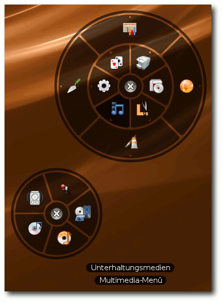
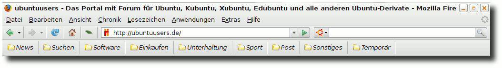
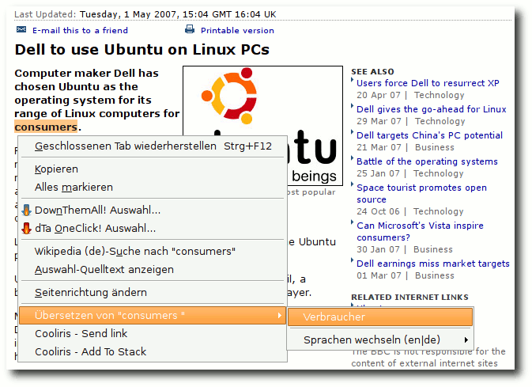

freiesMagazin Juni 2008
Topthemen dieser Ausgabe
Firefox für Anfänger
Firefox ist ein schneller und schlanker Webbrowser. Einen großen Mehrwert liefert die Möglichkeit, ihn mit Hilfe von Add-ons zu erweitern. Auch kann die Oberfläche individuell mit Themen an den persönlichen Geschmack angepasst werden. In dem Artikel sollen Basisfunktionen nur rudimentär erwähnt werden, der Schwerpunkt wird auf den alltäglichen Gebrauch und Add-ons gelegt. (weiterlesen)
IPCop - The bad packets stop here
Wem die Standardfunktionen der weitverbreiteten DSL-Router nicht ausreichen, dem könnte die freie Router-/Firewalldistribution IPCop gefallen. Benötigt wird lediglich ein - gerne auch ausgemusterter - PC. IPCop kann vier physikalisch getrennte Netze verwalten und den Datenverkehr zwischen diesen Netzen kontrollieren. (weiterlesen)
Notebook HP 530 und Linux
Die am häufigsten gestellte Frage beim Kauf neuer Hardware ist die, ob das Objekt der Begierde auch von Linux unterstützt wird. Hier sind die meisten auf Erfahrungsberichte von Linuxnutzern aus dem Internet oder auf die Hardwarekompatibilitätslisten verschiedener Linuxdistributionen angewiesen. Eine weitere Möglichkeit ist es, Hardware mittels einer Live-CD auf Linuxtauglichkeit zu testen, so wie dies in diesem Artikel mit dem HP 530 getan wurde. (weiterlesen)
Zum Index
Inhalt
Nachrichten
Microsoft will OpenDocument Format implementieren
,,People Behind KDE'' beginnt neue Interview-Runde
Kernel-Rückblick
F-Secure Linux Security 7.00 löscht Daten
Sicherheitslücke in OpenSSL bei Debian und Derivaten
Neues in die Spielekiste
Linux auf allen Asus-Mainboards
Distributionen aktuell
Neues aus der Welt der Mobilgeräte
Nine Inch Nails veröffentlichen ,,The Slip'' unter CC-Lizenz
Anleitungen
Von Windows auf Linux-Dateien zugreifen
Tipps und Tricks für den Alltag mit Linux
Das stille Erwachen - Nach dem Ruhezustand ist bei Hardy plötzlich der Ton weg
Software
Circular Applications Menu - Jetzt geht's rund
Firefox für Anfänger
Linux allgemein
IPCop - The bad packets stop here
Notebook HP 530 und Linux
Das Linux-Befehle-Buch
In der Box: Interview mit Henrik Kinnunen
Veranstaltungen
Interna
Editorial
Leserbriefe
Konventionen
Vorschau
Impressum
Soweit nicht anders angegeben, stehen alle Artikel und Beiträge in freiesMagazin unter der GNU-Lizenz für freie Dokumentation (FDL). Das Copyright liegt beim jeweiligen Autor. freiesMagazin unterliegt als Gesamtwerk ebenso der GNU-Lizenz für freie Dokumentation (FDL) mit Ausnahme von Beiträgen, die unter einer anderen Lizenz hierin veröffentlicht werden. Das Copyright liegt bei Eva Drud. Es wird die Erlaubnis gewährt, das Werk/die Werke (ohne unveränderliche Abschnitte, ohne vordere und ohne hintere Umschlagtexte) unter den Bestimmungen der GNU Free Documentation License, Version 1.2 oder jeder späteren Version, veröffentlicht von der Free Software Foundation, zu kopieren, zu verteilen und/oder zu modifizieren. Die xkcd-Comics stehen separat unter der Creative Commons-Lizenz CC-BY-NC. Das Copyright liegt bei Randall Munroe.
Zum Index
Editorial
Liebe Leserin, lieber Leser! Wie Sie sich vorstellen können, lebt ein Magazin von seinen Lesern (neben den Autoren natürlich). In der Hinsicht sind vor allem Rückmeldungen von Ihnen essentiell, um eine gute Ausgabe veröffentlichen zu können. Umso bedauerlicher finden wir es, dass im letzten Monat gerade einmal ein Leserbrief den Weg in unseren elektronischen Postkasten gefunden hat. Natürlich kann es sein, dass das Magazin so vollendet ist, dass man einfach nichts mehr daran verbessern kann. Dies würde uns schmeicheln, wüssten wir nicht, dass vor allem der Artikel ,,Die Reiche Debians'' letzten Monat besonders bei Ubuntu-Nutzern für Unmut sorgte. Würden wir nicht zufällig ein oder zwei Ankündigungsthemen in ,,fremden'' Foren mitlesen, wäre uns dies sicher entgangen, wodurch wir auf die Kritik bei den Beiträgen auch nicht hätten eingehen können (siehe unten). Daher hier noch einmal die Bitte: Wenn Sie etwas zu kritisieren haben, schreiben Sie uns eine E-Mail an
| D. Wagenführ | E. Drud |
Leserbriefe
Für Leserbriefe steht unsere E-Mailadresse
Die Ausgabe 05/2008 ist einfach spitzenklasse! Sehr wertvoll für mich als Ubuntu-User war der Artikel [zur] Systemwiederherstellung und die Tipps und Tricks für den Alltag mit Linux. Sehr interessant finde ich auch die jeweilige Vorstellung einer Distribution. Ihr macht einem da richtig Lust auf mehr.
Doch das absolute Highlight dieser Ausgabe war eindeutig der Beitrag ,,Die Reiche Debians''. Märchenhaft schön geschrieben und so bildlich, dass auch ich als Linux-Frischling mir ein Bild von der Debian-Welt machen konnte. Dieser Artikel schreit ja geradezu nach mehr! Mein Glückwunsch und macht weiter so! R. Holzer freiesMagazin: Vielen Dank für Ihren Leserbrief und vor allem für das Lob. Wir freuen uns, dass wir Ihren Geschmack getroffen haben und die Artikel für Sie nützlich waren. Wir hoffen, dass Sie auch weiterhin viel Freude an freiesMagazin haben. Die Redaktion behält sich vor, Leserbriefe gegebenenfalls zu kürzen. Zum Index
Microsoft will OpenDocument Format implementieren
Die Nachrichtenmagazine beschäftigte Ende Mai durchgehend nur ein Thema: ,,Microsoft will offenes Dokumentenformat ODF unterstützen'' (Link). Dabei hat Microsoft angekündigt, in das für das erste Halbjahr 2009 geplante Service Pack 2 von Office 2007 eine OpenDocument-Unterstützung zu integrieren. Dies verwunderte insofern, da Microsoft die letzten Monate bzw. Jahre sehr viel Energie dafür verbraucht hat, ihr eigenes Dokumentenformat Office Open XML (OOXML) von der ISO standardisieren zu lassen. Die Unterstützung für diesen ISO-Standard soll aber erst gegen 2010 mit Microsoft Office 14 folgen. Daneben hat Microsoft angekündigt, auch die Formate PDF und XML Paper Specification (XPS ist ein Microsoft-eigener PDF-Konkurrent) mit diesem Service Pack zu unterstützen. Um sich besser integrieren zu können, will man hierzu auch der Organization for the Advancement of Structured Information Standards (OASIS) beitreten, welche hinter ODF steht. Die simple Frage, die sich stellt, ist: Wieso dieser Schritt und warum gerade jetzt? Hierfür gibt es mehrere Antworten. Zum einen wird das OpenDocument Format inzwischen von vielen Regierungen als offizielles Dateiformat für den Datenaustausch und die Archivierung eingesetzt (Link). Durch das bisherige Verhalten sperrte Microsoft de facto die eigenen Office-Versionen vor dem Einsatz im öffentlichen Sektor aus (Link). Ein zweites Problem scheint die Implementierung von OOXML nach dem ISO-Standard zu sein. Der ISO-Mitarbeiter Alex Brown sorgte mit der Meldung, dass Microsoft Office das ISO-standardisierte OOXML nicht unterstütze für etwas Aufregung. Hauptsächlich weil darauf die Nachricht folgte, dass OpenOffice.org ebenso kein valides ISO-standardisiertes ODF erzeugt (Link). Beides ist aber keine Überraschung, denn es war bekannt, dass das eingereichte OOXML von Microsofts Office-Implementierung abweicht und zusätzlich nutzt OpenOffice.org das (bisher) nicht standardisierte ODF 1.1. Jedenfalls sind Microsofts Änderungen am OOXML-Format das Problem, denn sie müssen eine Rückwärtskompatibilität zu ihrem eigenen Format sicherstellen. Dies kostet bei einer Implementierung mehr Zeit als die Integration eines völlig neuen Dateiformats (Link). Der dritte Punkt ist natürlich die Untersuchung der Europäischen Kommission bezüglich der Dateninteroperabilität von Microsoft. Das laufende Kartellverfahren der EU richtet sich gegen Microsoft, weil diese mit ihren geschlossenen Dateiformaten die Benutzer zwingend an eine Software binden. Die Europäische Kommission überprüft, ob die zukünftige Unterstützung von ODF hieran etwas ändere (Link). Die britische Becta, IT-Behörde des Bildungs- und Familienministeriums, hat dagegen weitere Beweise zusammengetragen, die sich auf die mangelnde Interoperabilität und fehlende Wahlfreiheit bei der Verwendung von Microsofts Office-Produkten ergeben (Link). Microsofts Ankündigung sorgt für einen Zwiespalt. Natürlich freut man sich, dass die Firma in ihren weitverbreiteten Office-Produkten das OpenDocument Format unterstützen will. Dennoch bleibt es ,,nur'' eine Ankündigung, Taten müssen erst folgen. So gibt es von verschiedenen Seiten Kritik und es herrscht Skepsis (Link) (Link). Zusätzlich sind die Unregelmäßigkeiten (Link) beim OOXML-Standardisierungsprozess noch nicht vergessen. In Dänemark wurde zum Beispiel gegen die Entscheidung der Mehrheit des technischen Komitees OOXML als ISO-Standard abgesegnet. Ein Mitarbeiter dieses Komitees hat nun dagegen Beschwerde beim Dänischen Standardisierungsgremium eingelegt (Link). Südafrika wiederum hat gegen OOXML gestimmt und legte letzten Monat formale Beschwerde gegen den OOXML-Standardisierungsprozess ein. Dabei werden vor allem verschiedenen Prozessregeln angeführt, die nicht eingehalten wurden (Link). Implizit heißt das aber auch, dass OOXML kein offizieller ISO-Standard wird, solange diese Beschwerde nicht untersucht und erledigt ist. In Tschechien, die bei ihrem Wechsel von Nein auf Ja gerade diesen Prozess als offen und transparent bezeichnet hatten, geschah in den Tagen auch etwas, was einen faden Beigeschmack hinterlässt: Laut CNN (Link) hat die Regierung mit Microsoft einen Vertrag abgeschlossen, der Tschechien in Zukunft viel Geld sparen soll. Eine direkte Verbindung zwischen Abstimmung und diesem Vertrag ist natürlich nicht gegeben. Eine weitere Anschuldigung betraf die Aufstockung der observierenden Länder (,,O-Members'') beim ISO-Prozess, sodass diese zu teilnehmenden Ländern (,,P-Members'') wurden und damit ein höheres Stimmrecht hatten. Einige dieser Länder, darunter der Libanon, die Türkei, Zypern und Trinidad & Tobago stimmten bei der Wahl mit ,,Ja, ohne Kommentare'' und haben nun wieder ihren P-Status abgegeben (Link). In dem Beitrag werden diese Staaten als ,,Marionetten-Länder'' bezeichnet. Obwohl die OOXML-Abstimmung seit zwei Monaten vorbei ist, wirft die Entscheidung immer noch Wellen und wird dies wahrscheinlich auch in den nächsten Monaten immer noch tun. (dwa) Links
http://www.heise.de/open/news/meldung/108277
http://de.wikipedia.org/wiki/OpenDocument#Einsatz_des_OpenDocument-Formats_bei_.C3.B6ffentlichen_Stellen
http://www.consortiuminfo.org/standardsblog/article.php?story=20080521092930864
http://www.linux-magazin.de/news/odf_vs_ooxml_welcher_standard_funktioniert
http://news.zdnet.com/2424-3515_22-202407.html
http://www.golem.de/0805/59912.html
http://www.golem.de/0805/59674.html
http://www.internetnews.com/software/article.php/3748596
http://www.groklaw.net/article.php?story=20080522012330406
http://www.noooxml.org/irregularities
http://www.computerworlduk.com/toolbox/open-source/open-source-business/news/index.cfm?newsid=9160
http://www.consortiuminfo.org/standardsblog/article.php?story=20080523052458101
http://money.cnn.com/news/newsfeeds/articles/djf500/200805221553DOWJONESDJONLINE000914_FORTUNE5.htm
http://www.noooxml.org/forum/t-59702/puppet-countries-leaves-p-membership
Zum Index
,,People Behind KDE'' beginnt neue Interview-Runde
Die Interviewreihe ,,People Behind KDE'' (Link) läuft bereits seit dem 14. September 2000 und hat in dieser Zeit zahlreiche Entwickler und Helfer des Projekts näher vorgestellt. Allerdings gab es immer wieder Unterbrechungen, so wurden in der ersten Serie zwischen Mai 2002 und Februar 2004 gar keine Interviews publiziert. Nach der ersten Serie war wieder mehr als ein Jahr Pause, bis andere Interviewer die Reihe fortsetzten. Die dritte Serie lief von Januar bis August 2007. Zweck der Reihe ist es, der Open-Source-Gemeinschaft die Möglichkeit zu geben, die Mitwirkenden einmal genauer kennenzulernen. Viele der vorgestellten Personen waren den Anwendern allenfalls als Namen bekannt. Die Frage, wer hinter dem Namen steckt und was seine Motivation und seine Ziele sind, sollte in den Interviews, neben anderen Dingen, beantwortet werden. Die Serie wurde zum Vorbild von anderen, beispielsweise den Interviews ,,People of openSUSE'' (Link), die seit August 2007 wöchentlich jemanden aus dem openSUSE-Projekt vorstellt. In den ersten drei Serien von ,,People Behind KDE'' waren die Fragen festgelegt. Das erste Interview der vierten Serie, das Jeremy Paul Whiting (Link) vorstellt, ist diesbezüglich flexibler und geht auf die Antworten des Entwicklers ein. Jeremy Paul Whiting ist einer jener Programmierer, die nur in ihrer Freizeit an KDE arbeiten. Beruflich programmiert er jedoch mit der Qt-Bibliothek. In KDE widmet er sich überwiegend KNewStuff2. (hjb) Links
http://behindkde.org/
http://news.opensuse.org/category/people-of-opensuse/
http://behindkde.org/people/jpwhiting/
Zum Index
Kernel-Rückblick
,,There is little exciting there'', war Torvalds Kommentar zur zweiten Vorabversion des Kernels 2.6.26 (Link). Einer der wenigen bemerkenswerten Punkte dürfte dabei die Beseitigung des Big Kernel Lock sein (Link). Diese Funktion ist ein Überbleibsel aus alten Tagen, als der Global Kernel Lock noch den kompletten Kernel sperrte, zwischenzeitlich können jedoch einzelne Zweige gezielt von Prozessen gesperrt werden. Der Big Kernel Lock wurde aus Gründen der Abwärtskompatibilität beibehalten, mittlerweile werfen die damit verbundenen Einschränkungen jedoch mehr und mehr Probleme auf, so auch mit der Zusammenfassung des Codes der Semaphoren (siehe ,,Kernel-Rückblick'' in freiesMagazin 05/2008) für die unterschiedlichen Architekturen. Die Kernelversion 2.6.26-rc3 brachte wenig bemerkenswerte Neuerungen, hauptsächlich Änderungen bei Video-, Multimedia-, Netzwerk- und USB-Treibern (Link). Der vierte Release Candidate hingegen kann neben Aktualisierungen für die Netzwerk-Dateisysteme CIFS und NFS auch mit einer Korrektur des POSIX-Systembefehls mprotect(), die ein fehlerhaftes Setzen des NX-Bits bewirkte, aufwarten (Link). Die Folge wären Addressierungsprobleme beim Verwenden der ,,Physical Address Extension'' (PAE) zur Nutzung von Arbeitsspeicher jenseits der 4-GB-Grenze in 32-bit-Systemen gewesen. (mme) Links
http://kerneltrap.org/mailarchive/linux-kernel/2008/5/12/1797224
http://kerneltrap.org/Linux/Removing_the_Big_Kernel_Lock
http://kerneltrap.org/mailarchive/linux-kernel/2008/5/18/1864364
http://kerneltrap.org/mailarchive/linux-kernel/2008/5/26/1945864
Zum Index
F-Secure Linux Security 7.00 löscht Daten
Auch wenn Linux im Heimbereich und auch bei Firmen nur einen kleinen Prozentsatz einnimmt, gibt es bereits Hersteller von Sicherheitslösungen, die vor Gefahren aus dem Netz schützen wollen. So soll Linux Security der Firma F-Secure (Link) vor Malware und Netzwerkangriffen schützen. Der Schutz in der Client-Version 7.00 wurde aber etwas übertrieben, sodass sich F-Secure gezwungen sieht, einen Rückruf durchzuführen und allen Benutzern von F-Secure Linux Client Security rät, die Software umgehend zu entfernen. Das Problem ist, dass das Programm gegebenfalls ohne Rückmeldung das Systemverzeichnis /var oder Unterverzeichnisse darin komplett löscht, sodass das Betriebssystem im schlimmsten Fall den Dienst versagt. Um zu testen, ob man betroffen ist, gibt man $ grep "Device or resource busy" /var/opt/f-secure/fssp/dbupdate.log
im Terminal ein. Dies überprüft, ob in der Logdatei ein bestimmter Satz vorkommt, der als Indikator für den Fehler herangezogen werden kann. Sollte es eine Ausgabe geben, kann es sein, dass bereits Teile des /var-Verzeichnisses gelöscht wurden. Diese müssen durch ein Backup wieder hergestellt werden (Link). F-Secure hat bereits eine korrigierte Version 7.01 ohne diesen Fehler online gestellt (Link). (dwa) Links
http://www.f-secure.de/products/fsavcsl.html
http://www.f-secure.com/linux-weblog/2008/05/15/we-are-recalling-linux-security-700/
http://www.heise.de/open/news/meldung/108340
Zum Index
Sicherheitslücke in OpenSSL bei Debian und Derivaten
Letzten Monat wurde eine seit September 2006 enthaltene Sicherheitslücke in der OpenSSL-Bibliothek von Debian bekannt. Ein fehlerhafter Patch erzeugt Zufallszahlenfolgen, die vorhersagbar sind, womit auch die erzeugten Kryptoschlüssel anfällig für Brute-Force-Attacken sind. Betroffen sind neben der Distribution Debian und seiner Derivate alle Betriebssysteme, die gegebenfalls mit solchen schwachen Schlüsseln ,,infiziert'' sind. Heise hat hierzu einen Ratgeber herausgegeben (Link). Wer überprüfen will, ob seine Schlüssel betroffen sind, lädt sich das Prüfprogramm dowkd.pl als Archiv herunter (Link), entpackt dieses und macht die enthaltene Datei ausführbar. Danach kann man im Terminal über $ ./dowkd.pl user $ ./dowkd.pl host HOSTNAME
überprüfen, ob die persönlichen Schlüssel oder ein spezieller PC (HOSTNAME ersetzen) betroffen sind. Sollte als Ausgabe ,,weak key'' erscheinen, ist man von dem Problem betroffen. In diesem Fall sollte man die aktualisierten OpenSSL-Pakete einspielen und die Schlüssel neu erzeugen und verbreiten. Inzwischen ist auch eine Diskussion darüber entbrannt, wen denn nun die Schuld an diesem Debakel treffe und vor allem, wie man solche Fehler in der Zukunft verhindern könne. Einer der Hauptargumente bei Open-Source-Verfechtern ist oftmals, dass Sicherheitslücken und Schadcode meist schneller entdeckt werden, weil viele Augen über den Code schauen können. Der zwei Jahre alte Fehler bringt diese Argumentation nun ins Wanken (Link). (dwa)
http://www.heise.de/security/artikel/108001
http://security.debian.org/project/extra/dowkd/dowkd.pl.gz
http://www.heise.de/open/news/meldung/107921
http://ubuntu-tutorials.com/2008/05/13/openssh-openssh-vulnerabilities-confirm-fix-instructions/
Zum Index
Neues in die Spielekiste
Die Firma Linux Game Publishing hat sich, wie Anfang Mai (erst ohne Nennung des Titels) angekündigt, an die Arbeit gemacht, einen Windows-Klassiker auf Linux zu portieren: ,,Sacred'' (Link), das oft als aktualisierte Version von Diablo II angesehene Action-Rollenspiel des deutschen Herstellers Ascaron, soll zum 1. August 2008 für 39,95 €) in einer ,,Gold-Edition'' erhältlich sein. In dieser Version sind das Hauptspiel ,,Sacred'', die Erweiterung ,,Sacred: Underworld'', eine Weltkarte, sowie der Soundtrack auf einer separaten CD enthalten. Das Spiel wird in Deutschland durch ixsoft (Link) vertrieben. Mindestvoraussetzungen sind ein x86-Prozessor ab 1 GHz, 256 MB RAM, 3,7 GB Festplattenspeicher, ein DVD-Laufwerk und eine 3-D-fähige Grafikkarte mit mindestens 32 MB Speicher sowie eine Soundkarte (Link). ixsoft selbst möchte auch ein Windows-Spiel portieren. Dabei handelt es sich um das wie Monkey Island aufgebaute Adventure ,,Jack Keane'' (Link) von Hersteller Deck13. In diesem Spiel nimmt der Protagonist Jack Keane nicht ganz freiwillig den Auftrag an, einen britischen Agenten zu Tooth Island zu befördern. Die Portierung hat jedoch einen kleinen Haken: Das 39,95 € teure Spiel muss mindestens 200 Mal vorbestellt werden, damit es portiert wird. Solch eine Aktion hat der Versandhändler bereits mit den Adventures ,,Ankh'' und ,,Ankh 2'' erfolgreich durchgeführt. Die Zahlung muss natürlich erst getätigt werden, wenn das Spiel ausgeliefert wird (Link). Bereits erhältlich ist das Spiel ,,Penumbra: Black Plague'' (Link) des Spieleproduzenten Frictional Games. Im zweiten Teil der als Trilogie ausgelegten Abenteuerspielreihe mit Horror-Atmosphäre konzentiert man sich sehr auf Gänsehautgefühle und Rätsel. Der Spieler führt die Hauptfigur (Philipp) durch eine frostige verlassene Forschungsanlage im Untergrund Grönlands, jedoch im Gegensatz zum ersten Teil ,,Penumbra: Overture'' ohne Kämpfe, da es keinerlei Waffen gibt. Der große Reiz des Spiels liegt nach Ansicht von Rezensenten (Link) in der Abwechslung von Horror und zu lösenden Rätseln und Problemen. Nach Angaben des Herstellers besitzt das mit 13,71 € durchaus preiswerte Spiel eine fortgeschrittene dreidimensionale Darstellung, die physikalische Effekte sehr gut berücksichtigt. Benötigt wird sowohl für das Hauptspiel als auch für die erhältliche Demo eine 1 GHz schnelle CPU, 256 MB RAM und 300 MB Festplattenspeicher. Dieser Teil der Serie schließt die Geschichte von Penumbra ab, der dritte Teil ,,Penumbra: Requiem'' soll in Form einer Erweiterung bereits im Juni erscheinen (Link). Ein weiteres Adventure für Linux präsentiert RainSlick mit ,,Penny Arcade Adventures'' (Link). Das Spiel basiert dabei auf den bekannten Comics und wird auch Teile eines Rollenspiels enthalten, Kämpfe dagegen sind rundenbasiert. Das gesamte Spiel ist in Episoden aufgeteilt, die einzeln gekauft und gespielt werden können. Pro Episode kann dabei von einer Spielzeit zwischen acht und zehn Stunden ausgegangen werden. Der erste Teil ,,Penny Arcade Adventures: On the Rain-Slick Precipice of Darkness'' ist seit Ende Mai für 19,95 US-Dollar (ca. 13 €) erhältlich. Die Systemvoraussetzungen sind eine 1 GHz CPU, 512 MB RAM, 350 MB Festplattenplatz und ein 32-bit-Linux mit 3-D-fähiger Grafikkarte (Link). Im Auge behalten sollte man auch die Nachricht, dass Valve demnächst seine Source-Engine auf Linux portieren will. Das Gerücht hält sich schon seit letztem Jahr, das Portal Phoronix will aber Insider-Informationen haben, dass Valve tatsächlich daran arbeitet. Die Source-Engine benutzt aktuell noch Microsofts DirectX-API, soll aber aufgrund des modularen Aufbaus leicht auf OpenGL zu portieren sein (Link). (dwa, jse) Links
http://www.sacred2.com/de.html
http://www.ixsoft.de
http://www.pro-linux.de/news/2008/12655.html
http://www.jackkeane.de/
http://www.pro-linux.de/news/2008/12634.html
http://www.penumbrablackplague.com/
http://www.1up.com/do/reviewPage?cId=3166277
http://www.pro-linux.de/news/2008/12669.html
http://www.rainslick.com/
http://www.pro-linux.de/news/2008/12698.html
http://www.phoronix.com/scan.php?page=article
Zum Index
Linux auf allen Asus-Mainboards
Mittels Splashtop (Link) will Asus in Zukunft in jedes seiner Mainboards ein Linux-System integrieren. Das von DeviceVM entwickelte System wird unter dem Namen ,,Express Gate'' von Asus vermarktet. Beim PC-Start hat der Benutzer Zeit, das eigentliche Betriebssystem oder das Minimal-Linux Splashtop zu starten. Innerhalb weniger Sekunden hat der Anwender dann Zugriff auf einen Browser, Mediaplayer, Instant-Messenger und die VoIP-Software Skype. Das System hat dabei aber nur Lesezugriff auf die im Flash-Speicher liegenden Daten, sodass keinerlei Dateien gespeichert werden können - auch nicht auf einer angeschlossenen Festplatte. Asus setzt das System bereits bei einigen Komponenten der High-End-Klasse ein. In Zukunft sollen aber alle Mainboards und auch Laptops mit ,,Express Gate'' ausgestattet werden. (dwa) Links
http://www.splashtop.com/
http://www.golem.de/0805/59703.html
http://www.pro-linux.de/news/2008/12684.html
Zum Index
Distributionen aktuell
Es gab letzten Monat viele neue Versionen der verschiedensten Linux-Distributionen. Der Artikel soll die Neuigkeiten kurz zusammenfassen. Damn Small Linux
Im April erst erschien die finale Version von Damn Small Linux 4.3 und weniger als einen Monat später wurde der erste Release Candidate von Version 4.4 vorgestellt (Link). easys
Bereits letzten Monat ist nach der Veröffentlichung von Slackware 12.1 die darauf basierende Distribution easys GNU/Linux in der Version 4.1 mit Codename ,,The Landing'' erschienen. Als Kernel kommt die Version 2.6.24.5 zum Einsatz, der Kernel der Version 2.4 wird nicht mehr unterstützt. Dank ALICE (Advanced Linux Installation and Configuration Environment) sollen sowohl Einsteiger als auch fortgeschrittene Anwender die Distribution mit KDE-Desktopumgebung leicht installieren und konfigurieren können. Neu sind auch Metapakete, die über den ,,PkgWizard'' installiert werden. Für sonstige Programminstallation ist der ,,PkgManager'' zuständig (Link). Elive
Die auf Debian basierende Distribution Elive mit dem Fenstermanager Enlightenment hat eine neue Entwicklerversion 1.7.2 veröffentlicht. Neu ist unter anderem das optimierte Menü, die bessere Unterstützung von WLAN-Karten mit bcm43xx-Chipsatz, Fehlerbehebungen und Updates in der E17-Oberfläche und - vor allem für deutsche Benutzer interessant - ein aktualisiertes und auch in Deutsch vorliegendes Handbuch (Link). Fedora
Red Hat, die Firma hinter der Community-basierten Distribution Fedora, hat Version 9 offiziell freigegeben. Neu ist, neben diversen Programmaktualisierungen, vor allem die Möglichkeit, das System von USB zu starten, ohne dass persönliche Einstellungen verloren gehen. Wie andere Distributionen inzwischen auch, unterstützt Fedora das noch in der Entwicklung befindliche KDE 4.0 (GNOME 2.22 ist aber immer noch Standard), ebenso wie die letzte Beta-Version von Firefox 3 (Link). Genaueres kann den Release Notes entnommen werden (Link). Ein erster Test steht bei Golem auch schon bereit (Link).
Mit der Veröffentlichung von Fedora 9 läuft auch die Unterstützung für Fedora 7 ,,Moonshine'' aus. Ab dem 13. Juni 2008 wird die alte Version nicht mehr mit Sicherheitsaktualisierungen versorgt. Es wird jedem Benutzer empfohlen, auf eine neuere Fedora-Version umzusteigen (Link). Gentoo
Nachdem es vor allem zum Jahresanfang Probleme bei der Gentoo-Organisation gab, sodass die Gentoo-Stiftung die Anerkennung als gemeinnützige Organisation verloren hatte (siehe ,,Probleme bei Gentoo'', freiesMagazin 02/2008 (Link)), wurden im Februar die notwendigen Dokumente nachgereicht und die Gentoo-Stiftung wird wieder voll anerkannt. Nicht ganz so gut traf es die Vorsitzenden der Stiftung, die erst im März neu gewählt wurden. Anscheinend sind deren Sitzungen so gering besucht (weniger als 50 %), dass laut Satzung Neuwahlen anstehen müssten (Link). GoblinX
Nachdem im April bereits die Beta01-Versionen von GoblinX 2.7 für die Ausführungen Mini (Xfce) und Micro (Fluxbox) erschienen ist, wurde im Mai auch die Standardausführung mit den Fenstermanagern KDE, Fluxbox, Xfce, Enlightenment und WindowMaker veröffentlicht. Neu ist in allen drei Ausführungen der Kernel 2.6.24.3, AuFS, SquashFS und Linuxlive. Zusätzlich wurden die meisten Programme auf einen aktuellen Stand gehoben (Link). Linux Mint
Die erste Betaversion des kommenden Linux Mint 5 ,,Elyssa'' ist erschienen und bringt viele neue Funktionen mit. So lassen sich Programme aus dem mintMenu per Rechtsklick in den Autostart eintragen und ohne separate Paketverwaltung direkt aus dem Anwendungsmenü heraus deinstallieren. Aber auch mintUpdate, mintInstall und der Desktop haben einige Neuheiten erfahren. Selbst die Leistung wurde verbessert und am Aussehen gefeilt. Eine ausführliche Beschreibung aller Änderungen findet man in den Release Notes (Link). MEPIS antiX
Mit MEPIS antiX 7.2 ,,Vetëvendosje'' wurde eine leichtgewichtige und vor allem für ältere Rechner geeignete Distribution mit MEPIS-Kern veröffentlicht. Das System enthält Fluxbox und alternativ IceWM als Fenstermanager und daneben andere (teilweise von Debian Lenny übernommene) Programme wie Rox-Filer, Abiword, Gnumeric, Pidgin oder Iceweasel (Liste aller Programme (Link)). Die vollständige Distribution für 32-bit-Systeme (nicht älter als Intel Pentium I und AMD K6) steht mit knapp 360 MB zum Download bereit (Link). OpenSolaris
Die Community-Version von Solaris namens Open Solaris ,,Indiana'' ist als finale Version 2008.5 erschienen. Das System setzt auch auf den unter Linux bekannten Anwendungen auf, so zum Beispiel GNOME 2.20 als Fenstermanager, Compiz, Firefox, Gimp, OpenOffice.org, Thunderbird u. a. Als Solaris-eigen kann man das Dateisystem ZFS, die Service Management Facility (SMF) und den System-Tracer Dtrace bezeichnen. Die ISO-Datei steht als Live- und Installations-CD für 32-bit-Rechner zur Verfügung (Link). openSUSE
Die dritte und letzte Beta-Version von openSUSE 11.0 ist erschienen und bringt Kernel 2.6.25.3, KDE 4.0.4 und GNOME 2.22 mit. Einige Programme wie Wine oder Qt wurden auf eine neue Version aktualisiert und natürlich wurden auch viele Fehler bereinigt. Für die Barrierefreiheit ist die Taste F9 im Boot-Menü ganz wichtig: Hierüber werden die Menüeinträge vorgelesen (Link). Puppy Linux
Mit Version 4.00 ,,Dingo'' ist eine neue Ausgabe der Minimaldistribution Puppy Linux erschienen, deren ISO-Image gerade einmal 87 MB umfasst. Als Fenstermanager kommt JWM zum Einsatz mitsamt Standardanwendungen wie Abiword (Schreibprogramm), Gnumeric (Tabellenkalkulation), Seamonkey (Browser), Sylpheed (E-Mail-Programm) und Pidgin (Instant Messenger). Zusätzlich wurde erstmals auf GTK2 anstelle GTK1 und Tcl/Tk als GUI-Toolkit gesetzt (Link). Ein erster Test (in Englisch) beschäftigt sich mit der Installation, der Paketverwaltung und der Hardware-Erkennung (Link). RedHat
Zu dem im März 2007 veröffentlichten Red Hat Enterprise Linux (RHEL) 5 wurde nun die zweite Aktualisierung 5.2 freigegeben. Neben zahlreichen Bugfixes, mehr Leistung und einer besseren Hardwareunterstützung wurden auch die Virtualisierungstechniken optimiert. Auch neue Programmversionen von OpenOffice.org, Firefox, Thunderbird oder Evolution haben ihren Weg in die neue Version gefunden, die Systembasis (also Kernel, X-Server etc.) wurde aber wie gewohnt nicht aktualisiert (Link). Sabayon Linux
Die dritte Beta-Version (Loop) von Sabayon Linux 3.5 ist für 32-bit- und 64-bit-Systeme erschienen. Seit Loop 2 wurde die Startzeit optimiert, ein Online-Pakete-Browser eingebaut, der neue Entropy Paketmanager integriert und vor allem kann man nun bei der Installation auswählen, welche Pakete installiert werden sollen. Sabayon Linux 3.5 Loop 3 soll auch auf dem Asus EeePC ohne Probleme laufen (Link). Ubuntu
Nachdem im April Ubuntu 8.04 LTS ,,Hardy Heron'' erschienen ist, plant Mark Shuttleworth, Ubuntu-Gründer und Chef von Canonical, den weiteren Verlauf ,,seiner'' Distribution. So wird es für die LTS-Versionen ab sofort immer vier Point-Releases geben, wie das schon bei Ubuntu 6.06 LTS ,,Dapper Drake'' zweimal der Fall war. Zusätzlich soll im April 2010 die nächste LTS-Version erscheinen (Link). Zenwalk
Das auf Slackware basierende Zenwalk Linux hat die erste Beta-Version von Version 5.2 veröffentlicht. Der Paketmanager wurde seit der letzten finalen Version komplett überarbeitet und liefert neue Funktionen. Das Videoabspielprogramm MPlayer unterstützt nun auch DVD-Menüs, der Suspend-Modus für Laptops wurde verbessert und natürlich gibt es viele aktualisierte Programme und Pakete. Für die Betaversion wird der Kernel 2.6.25.4 und Xfce 4.2.2 eingesetzt (Link). Phoronix haben zur Beta-Version von Zenwalk 5.2 einen kleinen Bericht und viele Screenshots (Link). Wichtiger Hinweis: Alpha- und Beta-Versionen sind nicht für den täglichen Einsatz, sondern nur für Entwickler und Tester gedacht! (dwa) Links
http://damnsmalllinux.org/cgi-bin/forums/ikonboard.cgi?;act=ST;f=36;t=20117
http://easys.gnulinux.de/de/index.php/Main/Neues
http://www.elivecd.org/Main/News/elive-development-1.7.2-released
http://www.pro-linux.de/news/2008/12675.html
http://docs.fedoraproject.org/release-notes/f9/en_US/
http://www.golem.de/0805/59629.html
http://news.softpedia.com/news/Fedora-7-Will-Die-on-June-13th-84624.shtml
http://www.freiesmagazin.de/freiesMagazin-2008-02
http://kloeri.livejournal.com/4623.html
http://www.goblinx.com.br/en/index_news.htm
http://www.linuxmint.com/rel_elyssa.php
http://antix.mepis.com/index.php/Applications_used_in_antiX-M7.2
http://www.mepis.org/node/14192
http://www.pro-linux.de/news/2008/12646.html
http://www.linux-magazin.de/news/beta_3_von_open_suse_11_ist_fertig
http://www.linux-magazin.de/news/puppy_linux_4_00_ist_fertig
http://www.junauza.com/2008/05/puppy-linux-40-has-it-learned-new.html
http://www.heise.de/open/news/meldung/108247
http://www.sabayonlinux.org/forum/viewtopic.php?f=60
http://www.markshuttleworth.com/archives/146
http://distrowatch.com/?newsid=04906
http://www.phoronix.com/scan.php?page=article
Zum Index
Neues aus der Welt der Mobilgeräte
Hardware
Letzten Monat wurde das One-Mini-Notebook A110 vorgestellt. Das Gerät besitzt eine VIA C7-CPU mit 1 GHz, 512 MB DDR2-Speicher, 2 GB Flashspeicher und 64 MB Onboard-VIA-Grafik. Der Bildschirm misst kleine 7 Zoll mit 800x480 Bildpunkten. Das A110 wird mit Linpus Linux Lite ausgeliefert und kostet 229 Euro (Link).
Aus Hong Kong kommt ein noch preiswerteres UMPC-Modell namens Alpha 400 von Bestlink, welches nur 250 USD (160 €) kosten soll. Das Gerät besitzt eine 400 MHz XBurst-CPU, 128 MB RAM, 1-2 GB internen Flashspeicher und ein 7-Zoll-Display mit 800x480 Pixeln. Die Speicherfähigkeit des Alpha 400 kann auch durch USB-Festplatten bis 160 GB oder über SD-Karten bis 32 GB erweitert werden. Es ist bisher nicht klar, welche Linux-Software auf dem Gerät zum Einsatz kommt und ob es auch außerhalb des chinesischen Marktes erhältlich sein wird (Link). DesktopLinux.com haben sich dem neuen gPC mini von Everex angenommen, der ähnlich wie der gPC auf Online-Programme setzt, vor allem für MySpace-Nutzer (Link). Keinen UMPC, sondern ein herkömmliches Notebook will die dänisch-schwedische Firma Zepto seinen deutschen und österreichischen Kunden mit Linux schmackhaft machen. Die beiden Modelle 3214W und 3215W will der Hersteller mit Mandriva 2008.1 PowerPack ausstatten, sodass der Käufer auch drei Monate kostenlosen Web-Support bei Mandriva mitkauft. Die Notebooks selbst sind nicht für Spieler gedacht, sollen aber lange Akkulaufzeiten liefern (Link). Neben Mobilgeräten sind auch Flat-Panel-PCs im Kommen. Diese bestehen zum großen Teil nur aus einem Touchscreen, während die PC-Komponenten im Monitorfuß versteckt sind. So hat Contendo Systems zwei Flat-Panel-PCs mit Linux oder Windows CE vorgestellt, die sogar über Netzwerk mit Strom versorgt werden können. Das ITP-070 hat ein 7-Zoll-Display mit einer Auflösung von von 800x480 Pixeln und wiegt weniger als 1 kg. Der etwas größere ITP-104 hat ein 10,4-Zoll-Display mit 800x600 Bildpunkten und wiegt etwas über 1,5 kg. Beide Geräte können im Quer- und Hochformat betrieben werden. Im Inneren arbeitet eine Marvell-CPU mit bis zu 806 MHz mit 64 MB oder 128 MB RAM und jeweils noch einmal die Hälfte davon als extra Flash-Speicher (Link).
Das System der Flat-Panel-PCs von Blue Heron Network basiert auf Ubuntu und soll vor allem Patienten mit neuro-degenerativen Beschwerden dabei helfen, unabhängig zu bleiben. Über das Internet soll ein Patient mit seiner Familie und dem Pflegepersonal leicht in Kontakt bleiben können. Im Inneren arbeitet ein Intel-Celeron-Prozessor mit 512 MB RAM und 4 GB Solid State Drive. Der Monitor, der eher wie ein TV-Gerät aufgebaut ist, hat eine Größe von 15 Zoll, es soll aber gegebenenfalls verschiedene Größen zum Kauf geben. Für die Kommunikation sorgt ein Ethernet-Anschluss und natürlich WiFi (Link). Interessant ist auch das neue Media-Control-System von Fiire, welches aus einem Server und mehreren Thin-Clients besteht und LinuxMCE (Link) als Betriebssystem einsetzt. Der Server mit Platz für bis zu 6 TB-Festplattenkapazität übernimmt dabei die Verteilung von Media-Daten (DVD, Streaming, Musik, Fotos etc.) an die Clients. Zusätzlich kann das System auch noch die Steuerung der Klimaanlage, der Lichtanlage, eines Kameraüberwachungssystems und der Telefonanlage übernehmen (Link). Software
Die Distribution Ubuntu ist nicht nur im Desktop- und Server-Bereich erfolgreich, sondern will auch im Mobilmarkt Fuß fassen. Hierfür wird zum einen von Canonical, der Firma hinter Ubuntu, Ubuntu Mobile (Link) entwickelt, welches vor allem auf Intel-Plattformen laufen soll. Zum anderen wird von Nokia ein Projekt finanziert, welches Ubuntu auf die ARM-Architektur übersetzt. Auf der Embedded Linux Conference im April konnte so bereits ein Nokia N800 mit Ubuntu gezeigt werden (Link). Auf Basis dieser Arbeit hat ein anderer Entwickler Ubuntu 7.04 auf Sharps Zaurus PDA portiert. Die Ubuntu Zaurus Distribution ist mit 80 MB sehr klein und sollte vorher in QEMU eingerichtet und dann auf den PDA übertragen werden (Link). Auf der diesjährigen JavaOne-Konferenz hat Sun Microsystems den aktuellen Stand ihrer JavaFX-Technologie vorgestellt. Mit JavaFX sollen so genannte Rich Internet Applications (RIAs), Webanwendungen, die wie Desktop-Anwendungen funktionieren, sowohl auf Desktop-Geräten als auch auf Mobilgeräten weite Verbreitung finden. Sun befindet sich damit in direkter Konkurrenz zu Adobes AIR (Adobe Integrated Runtime) und Microsofts Silverlight. JavaFX Mobile konnte bereits auf einem auf Googles Android-Software basierendem Handy gezeigt werden, soll aber erst im Frühling 2009 fertiggestellt werden (Link). Ebenfalls auf der JavaOne-Konferenz hat Motorola einige neue Entwicklerwerkzeuge vorgestellt. Die Programme basieren dabei auf der Eclipse-Entwicklungsumgebung. MotoDEV Studio for Java ME (Micro Edition) in der Version 1.3 unterstützt somit zum Beispiel auch das kommende Linux-basierende Handy Moto Z6w (Link). Wer im Übrigen einen guten Überblick über die Unterschiede zwischen dem System der LiMo-Foundation und Googles Android haben möchte, findet bei MobileCrunch einen guten Artikel (Link). So wird erklärt, welche Firmen hinter den Systemen stehen und wie weit sie bereits verbreitet sind. Der größte Unterschied ist wohl, dass LiMo nur eine Systembasis darstellt, auf die dann (vom Mobilhersteller eigens programmierte) Anwendungen aufgesetzt werden. Android dagegen setzt auf ein vollständiges Betriebssystem mitsamt Anwendungen und Benutzeroberfläche.
Der Artikel ,,Google carves an Android path through open-source world'' (Link) gibt auch einen guten Überblick über Android, den Aufbau der Software und die Lizenzproblematik. Neuigkeiten gibt es auch vom OpenMoko-Projekt, die ein freies Mobiltelefon auf Linux-Basis erstellen wollen. Bis vor einiger Zeit setzte man noch auf das GUI-Toolkit GTK+, um die grafische Oberfläche darzustellen. Nach eigenen Aussagen sei GTK+ aber zu ressourcenhungrig, sodass aktuell ein Wechsel auf Qtopia von Trolltech, welches auf Qt setzt, stattfindet. Zusätzlich hat man auch den Fenstermanager Matchbox durch Enlightenment e17 ersetzt, der eine schnellere Reaktionszeit für Handy-Anwendungen liefern soll. Es sei aber weiterhin möglich, GTK+-Anwendungen auf Benutzerseite zu integrieren (Link). ,,One Laptop per Child''-Projekt
Wie bereits von verschiedenen Seiten zu hören, hat Nicholas Negroponte nun offiziell bestätigt, dass Windows auf dem XO-Laptop des OLPC-Projektes zum Einsatz kommen werde. Bereits im Juni sollen erste Modelle mit Linux und Windows als Dual-Boot ausgeliefert werden. Negroponte sagte, dass dieser Schritt notwendig sei, um mehr Laptops zu den Kindern zu bringen. Die Lernoberfläche Sugar ist damit zumindest für Windows auch erst einmal gestorben, da beim OLPC-Projekt keine Ressourcen vorhanden sind, das System auf Windows zu portieren (Link). Damit Sugar aber nicht untergeht, wurde die Stiftung ,,Sugar Labs'' gegründet, die auch von Ex-OLPC-Manager Walter Bender unterstützt wird. Die Stiftung soll dafür Sorge tragen, dass das Lernsystem auch weiterhin entwickelt wird (Link). Der ehemalige OLPC-Sicherheitsentwickler Ivan Krstić hat sich auch noch einmal abschließend zu Wort gemeldet. Vor allem die ,,OLPC verrät seine Prinzipien wegen Windows''-Rufe wollte er damit eindämmen. Seiner Meinung nach ist auch ein Windows-System nicht schlimm, wenn es zum einen nicht die einzige Lösung ist und zum anderen das Lernen nicht behindere. Krstić erhebt dagegen schwere Vorwürfe gegen die (nicht existenten) Vertriebsmethoden des XO-Laptops. So würde nicht sichergestellt, ob die Geräte überhaupt dort ankommen, wohin sie geliefert werden sollten. Und wie viele Geräte zurzeit an welchem Ort der Welt im Einsatz sind, könne niemand sagen (Link). Und trotz dieser Komplikation hat das OLPC-Projekt den Nachfolger des OLPC-Laptops namens ,,XO-2'' angekündigt. Interessant ist vor allem, dass es keine herkömmliche Tastatur mehr gibt, sondern diese wie die Ausgabefläche als Touchscreen umgesetzt werden soll. Beide funktionieren dann je nach Anwendungsgebiet auch als Tablet oder als eBook-Reader. Als Preisziel hat sich das Projekt die 75-Dollar-Marke gesetzt. Angesichts der aktuellen 188 US-Dollar für den XO-Laptop, muss man abwarten, ob dieser Preis tatsächlich erreicht werden kann. Die ersten Modelle soll es 2010 geben (Link). (dwa) Links
http://www.linux-magazin.de/news/eee_pc_klon_fuer_229_euro
http://www.desktoplinux.com/news/NS2846711250.html
http://desktoplinux.com/articles/AT7294579196.html
http://www.pro-linux.de/news/2008/12708.html
http://www.linuxdevices.com/news/NS3151860278.html
http://www.linuxdevices.com/news/NS6101019273.html
http://www.linuxmce.org/
http://linuxdevices.com/articles/AT5705863582.html
https://wiki.ubuntu.com/MobileAndEmbedded
http://linuxdevices.com/news/NS2097004728.html
http://linuxdevices.com/news/NS7548149165.html
http://ostatic.com/161322-blog/javafx-a-bright-future-on-open-source-based-mobile-devicesss
http://www.golem.de/0805/59536.html
http://mobilecrunch.com/2008/05/14/android-vs-limo-whats-the-difference/
http://news.cnet.com/8301-13580_3-9949793-39.html
http://arstechnica.com/news.ars/post/20080522-openmoko-linux-mobile-phone-ditches-gtk-gets-qt-and-e17.html
http://www.pro-linux.de/news/2008/12688.html
http://www.golem.de/0805/59794.html
http://radian.org/notebook/sic-transit-gloria-laptopi
http://www.pro-linux.de/news/2008/12710.html
Zum Index
Nine Inch Nails veröffentlichen ,,The Slip'' unter CC-Lizenz
Die Industrial-Rock-Band ,,Nine Inch Nails'' um Frontmann Trent Reznor hat einen weiteren Schritt auf dem Weg der unabhängigen Musik-Vermarktung gemacht und mit ,,The Slip'' ihr zweites Album unter CC-Lizenz veröffentlicht. Ihr neuestes Werk bieten die amerikanischen Musiker als ,,Dankeschön an die Fans'' auf ihrer Website (Link) zum Gratis-Download an. Das zehn Songs umfassende Album steht unter CC-BY-NC-SA-3.0-Lizenz und jedermann ist eingeladen, es mit Freunden zu teilen oder in einem Remix seine persönliche Kreation daraus zu machen. Bereits im März machten NIN auf sich aufmerksam, als sie ihre Instrumental-Kompilation ,,Ghosts I-IV'' (Link) unter die freie Creative-Commons-Lizenz stellten und einen kostenlosen Download der ersten neun Tracks einrichteten (siehe ,,Amazon-MP3-Downloader auch für Linux'' in freiesMagazin 04/2008 (Link)). Die anderen Stücke der Platte konnten die Fans in verschiedenen Versionen von 5 bis 300 US-Dollar erstehen, sodass das Musikprojekt an der Aktion, neben weltweiter Beachtung, in wenigen Tagen auch über 1,6 Millionen US-Dollar verdiente.

Nine Inch Nails - ,,The Slip''.
© Arne Weinberg,
Template: © Helder Fraga (GPL)
1988 gründete Trent Reznor das Projekt Nine Inch Nails, um damit seine musikalischen Ideen zu verwirklichen. Über mehrere Zwischenstationen gelangte die Band zu Interscope Records, einem Label der weltweit größten Plattenfirma Universal Music. Im Herbst des vergangenen Jahres kam es zu einem Streit der Vertragspartner und NIN beschloss, sich von Interscope zu trennen und ihre Musik fortan selbst über das Internet zu vermarkten (Link). Damit stand dem ersten CC-Album nichts mehr im Wege und die Gruppe konnte ihre ersten Zeichen für den Vertrieb digitaler Musik auf Grundlage freier Lizenzen setzen. (awe) Links
http://dl.nin.com/theslip/
http://ghosts.nin.com/
http://www.freiesmagazin.de/freiesMagazin-2008-04
http://en.wikipedia.org/wiki/Nine_Inch_Nails#Disputes_with_Universal_Music_Group
Zum Index
Von Windows auf Linux-Dateien zugreifen von Matthias Kietzke
Computer speichern Daten auf sogenannten Partitionen. Diese Partitionen können unterschiedliche Formate haben. Windows nutzt standardmäßig NTFS, Linux hingegen ext3. Da die Formate untereinander inkompatibel sind, kann das eine nicht ohne Weiteres auf die Daten des anderen Systems zugreifen. Dieser Artikel zeigt Möglichkeiten, wie man dennoch von Windows aus auf ext3-Partitionen von Linux zugreifen kann. Grundsätzlich bieten sich für den Zugriff auf ext3-Partitionen zwei Programme an. Zum einen der LinuxReader von DiskInternals (Link) und dann Ext2 IFS von Stephan Schreiber (Link). Beide funktionieren ab Windows 2000 und kommen auch mit Dateien größer als 2 GB zurecht. LinuxReader
LinuxReader ist schnell über die mitgeführte Installationsroutine installiert . Es handelt sich um ein eigenständiges Programm, welches die verfügbaren Partitionen anzeigt. In einer Art ,,Browser'' kann auf diese zugegriffen und Dateien kopiert werden. Allerdings kann das Programm nicht auf ext3-Partitionen schreiben. Dateien können also nur gelesen und auf eine Windows-Partition kopiert werden. Ext2 IFS
Anders das Programm Ext2 Installable File System (IFS), welches mittlerweile in Version 1.11 vorliegt. Es installiert sich im Windows-System und ermöglicht einen lesenden und schreibenden Zugriff. Verfügbare ext3-Partitionen werden wie andere Laufwerke auch im Windows Explorer angezeigt und können dort wie gewohnt angesprochen werden. Die Installation verläuft ähnlich einfach wie beim LinuxReader. Einfach die mitgeführte Installationsroutine aufrufen und den Bildschirmanweisungen folgen. Die Installationsoptionen beinhalten bereits sinnvolle Standardeinstellungen, sodass man diese nicht zwingend anpassen muss. Am Ende können den ext3-Partitionen eigene Laufwerksbuchstaben zugewiesen werden. FAT32-Datenpartition
Die dritte Möglichkeit, welche auch der Autor nutzt, ist die Formatierung einer Partition mit dem FAT32-Format. Dies kann unter Windows oder Linux geschehen, denn beide Systeme können problemlos davon lesen und darauf schreiben. Es bietet somit eine gemeinsame Dateiablage. Man sollte aber darauf achten, dass FAT32 nur Dateien mit einer maximalen Größe von 4 GB speichern kann. Zusammenfassend ist zu sagen, dass das Programm Ext2 IFS eine einfache, stabile und sehr komfortable Möglichkeit ist, von Windows aus auf seine Linux-Daten zuzugreifen. Links
http://www.diskinternals.com/linux-reader/
http://www.fs-driver.org
| Autoreninformation |
| Matthias Kietzke nutzt Debian, MacOS und Windows. Da er nicht ständig den Rechner neu booten wollte, um an seine Dateien zu kommen, schaute er sich nach entsprechenden Möglichkeiten um. Einen Teil seiner Lösungsvorschläge erläutert er im vorhergehenden Artikel. |
Tipps und Tricks für den Alltag mit Linux von Christoph Langner
In stetiger Folge möchte ich hier versuchen, ein paar Tipps und Tricks weiterzugeben, die das Benutzen von Linux etwas angenehmer machen. Denn manch äußerst praktische Funktion ist zwar nicht direkt offensichtlich, doch wenn man sie einmal kennt, sehr intuitiv. Alten Linuxhunden erzähle ich vermutlich olle Kamellen, doch Einsteiger und Umsteiger sollten hier Monat für Monat einen Blick reinwerfen. Folge 2: Umgang mit dem Terminal
Der Umgang mit dem Terminal ist für viele Einsteiger ein abschreckendes Erlebnis. Sie fühlen sich in DOS-Zeiten zurückversetzt und klagen darüber, dass man unter Linux alles über das Terminal machen müsse. Fortgeschrittene Anwender sind dagegen recht froh darum, dass unter Linux die graphische Oberfläche eben nur eine Oberfläche und nicht essentieller Teil des Systems ist und man so praktisch alles über ein Terminal regeln kann. Dieses kann ist fett gedruckt, denn das Terminal ist - besonders unter anwenderfreundlichen Distributionen wie Fedora, Mandriva, openSUSE oder Ubuntu - eine Option und kein Muss. Für praktisch alle administrativen Aufgaben gibt es graphische Oberflächen. Ausnahmen stellen hier die Serverdienste da. Diese besitzen meist keine graphischen Oberflächen, warum auch? Diese Dienste laufen meist auf Rechnern in Rechenzentren ohne dass der Administrator direkten Zugang zum Rechner hätte. Konfigurationsdateien sind daher der schnellste Weg, um solche Dienste einzurichten. Aber zurück zum Desktoprechner. Warum kommt auch ein Einsteiger oft mit einem Terminalfenster in Berührung, wenn man doch auch alles über die graphische Oberfläche machen könnte? Einsteiger wenden sich oft an Internetforen oder Chats, um Hilfe zu ihren Problemen zu bekommen. Die helfenden Hände dort wissen meist recht genau, wo es zwickt. Nun ist es deutlich einfacher, in einem auf Texten basierenden Medium Befehle und ihre Ausgaben zu nennen, als lang und breit den Weg zu einem Konfigurationsmenü zu beschreiben und dann mit Screenshots die Information auszutauschen. So kommen Hilfesuchende schneller an ihre Lösung und Helfende ersparen sich lange Beschreibungen, wo welcher Dialog aufzurufen wäre. Automatische Ergänzung von Eingaben
Man kann sich die Arbeit mit einem Terminal deutlich erleichtern, wenn man ein paar zusätzlich Kniffe kennt. Dazu muss man nicht einmal Befehle kennen oder gar lernen. Man muss nur wissen, dass es diese Kniffe gibt. Dazu gehört zum Beispiel die automatische Ergänzung von Befehlen und ihren Optionen bzw. von Datei- und Ordnernamen. Möchte man beispielsweise eine Sicherheitskopie der Datei /etc/network/interfaces erstellen, so könnte man den kompletten Pfad zur Datei eingeben, man kann jedoch auch nur die ersten Buchstaben eingeben und dann mittels der Taste Tab den Rest ergänzen lassen. Also z. B. so # cp /etc/netw[TAB]/int[TAB] /etc/ netw[TAB]/int[TAB].bak
Sollte der bereits eingegebene Pfad noch nicht eindeutig sein, so ertönt beim Drücken der Tabulator-Taste ein kurzer Piepton. Drückt man die Taste ein zweites Mal, so erscheint die Liste aller möglichen Treffer: # nano /etc/net[TAB][TAB] netscsid.confnetwork/networks
Gibt man nun den Pfad soweit ein, dass er eindeutig ist, so kann man wie gewohnt weiterarbeiten: # nano /etc/netw[TAB]/int[TAB]
Die Vorteile beim Arbeiten mit der ,,Tab-Completion'' - so nennt man die automatische Vervollständigung mittels der Tabulator-Taste im englischen Linux-Jargon - liegen klar auf der Hand. Man spart viel Zeit sowie Tipparbeit und minimiert die Fehlerquote, denn automatisch ergänzte Dateipfade können keine Tippfehler enthalten. Dies funktioniert bei einigen LInux-Systemen (z. B. Ubuntu) nun nicht nur mit Dateien und Ordnern, sondern auch mit Befehlen und ihren Optionen. Mit apt-get kann man beispielsweise Programme über ein Terminalfenster installieren. Dieses Programm beherrscht ebenfalls die automatische Vervollständigung seiner Optionen. Gibt man beispielsweise # apt-g[TAB] ins[TAB] epiphany-b[TAB]
ein, so wird letztendlich der Webbrowser Epiphany installiert, da das Kommando zu # apt-get install epiphany-browser
vervollständigt wird. Die Option install und der Paketname epiphany-browser werden hier jeweils ergänzt. Auch hier gibt es dann wieder die Möglichkeit mittels eines zweifachen Tab alle # apt-get install epiphany[TAB] epiphany epiphany-browser ...
Pakete aufzuzeigen, wenn die Eingabe bislang noch nicht eindeutig ist. Historie bisheriger Eingaben
Hat man einmal einem längeren Befehl eingegeben und sich dabei vertippt, so wäre es ärgerlich diesen noch einmal eingeben zu müssen. Daher werden Eingaben in das Terminalfenster von Haus aus gespeichert. Die bisher eingegebenen Befehle kann man einfach über die Hoch- und Runtertasten durchgehen. Hat man den gewünschten Befehl gefunden, so kann man ihn mit einem Druck auf Enter ausführen oder mittels der Links- bzw. Rechtstaste bearbeiten. Ist man auf der Suche nach einem Befehl, den man vor längerer Zeit eingegeben hat und möchte nicht die gesamte Historie mittels den Hoch- und Runtertasten durchgehen, so kann man mittels der Tastenkombination Strg + R nach diesem Befehl suchen. Ein passender Treffer wird während der Eingabe angezeigt, sollte es mehrere Treffer geben, so kann man erneut Strg + R drücken, dabei wechselt man von einem Treffer zum Nächsten. Wieder führt man mit Enter den gefundenen Befehl aus. Mit der Links- bzw. Rechtstaste ist es auch wieder möglich, den gefundenen Befehl zu bearbeiten. Copy & Paste mit mittlerer Maustaste
In Foren, Wikis oder Internetseiten findet man oft Befehle, die man einfach übernehmen könnte. So erspart man sich die eine oder andere Tipparbeit. In den Desktopumgebungen ist es möglich Texte mit der Maus zu selektieren, die rechte Maustaste zu drücken, im Kontextmenü per ,,Kopieren'' den selektierten Text in die Zwischenablage zu übernehmen und dann im Terminal über den Menüpunkt ,,Einfügen'' in das Terminal anzufügen. Doch man kann sich unter Linux hier wieder Arbeit ersparen. Selektierter Text liegt automatisch in der ,,Zwischenablage'' des X-Servers. Man muss also gar nicht mit Kontextmenüs arbeiten um einen Befehl in ein Terminalfenster einfügen zu können. Es reicht aus, den gewünschten Text zu markieren, dann das Terminalfenster zu öffnen und die mittlere Maustaste (bzw. die Daumentaste oder die ,,Mausrad-Taste'') zu drücken. Schon ist der markierte Text im Terminal zu lesen. Informationen zu Befehlen, der Befehl ,,man''
Es kommt oft vor, dass man zwar weiß, mit welchem Programm oder mit welchem Befehl man eine Aktion durchführen könnte, aber man weiß nicht genau wie. Hier helfen die sogenannten ,,Manpages''. Jedes Programm aus den Paketquellen besitzt normalerweise eine solche Manpage. Man kann sie in einem Terminal mittels $ man BEFEHL
aufrufen. Mit den Tasten Hoch und Runter kann man im Text scrollen. Drückt man Shift + 7, erzeugt also einen Slash /, so kann man im Text suchen. Alle Treffer werden weiß hinterlegt. Mit Strg + N springt man von einem Treffer zum Nächsten. So kann man sehr schnell nachlesen, was eine Option in einem Befehl bewirkt. Zu vielen Befehlen existieren auch ins Deutsche übersetzte Manpages. Diese muss man jedoch meist manuell über das Paket manpages-de nachinstallieren.
| Autoreninformation |
| Christoph Langner benutzt Ubuntu Linux in der aktuellen Version Hardy Heron. Das Terminal ist ein wichtiges Werkzeug für Linux, das man allerdings erlernen muss. |
Das stille Erwachen - Nach dem Ruhezustand ist bei Hardy plötzlich der Ton weg von Christian Imhorst
High Definition Audio (HDA) ist eine Spezifikation für Audio-Chips, die 2004 von Intel eingeführt wurde. Sie sagt noch nichts weiter über den Chip selbst aus, außer dass er gewisse Mindestanforderungen erfüllen muss (Link). Bei GNU/Linux wird der Chip vom ALSA-Kernel-Modul ,,snd-hda-intel'' angesteuert. Da es sich aber bei HDA-Intel um eine ganze Reihe von Soundchips handelt, die alle nur einen gewissen Standard erfüllen müssen und die teilweise gar nicht oder nur lückenhaft dokumentiert sind, kann es zu Problemen mit den freien Treibern kommen. Aktuell stellen viele Notebookbesitzer fest, dass sie nach dem Upgrade auf Ubuntu 8.04 ,,Hardy Heron'' keinen Sound mehr haben, wenn der Rechner aus dem Ruhezustand erwacht. Der Chip selbst funktioniert eigentlich problemlos, aber nur bis zu einem Power-on-Standby, Suspend-to-Ram oder Suspend-to-Disk. Danach bleibt er stumm, wird aber vom System als aktiv erkannt. Normalerweise hört man beim Aufwachen ein leises kurzes Knacken, so wie man das auch beim Hochfahren des Rechners hören kann, was zeigt, dass der Chip am Start ist. Das fällt beim Kernel 2.6.24-16 leider weg. Mit Ubuntu 7.10 ,,Gutsy Gibbon'' lief der Sound daher noch wunderbar, seit Hardy werden die Module zwar alle geladen und lspci zeigt den Soundchip auch als aktiv an, doch die Boxen bleiben stumm. Ein kleiner Workaround schafft hier Abhilfe (Link). Wenn man wissen möchte, ob im eigenen Notebook überhaupt ein HDA-Chip verbaut worden ist, dann kann man sich das mit folgendem Befehl anschauen: $ cat /proc/asound/cards 0 [Intel]: HDA-Intel - HDA Intel HDA Intel at 0xfc200000 irq 23
Um genau zu erfahren, um welchen Chip es sich handelt, braucht man jedoch den Befehl aplay -l: $ aplay -l **** Liste von PLAYBACK Geräten **** Karte 0: Intel [HDA Intel], Gerät 0: ALC268 Analog [ALC268 Analog] Untergeordnete Geräte: 1/1 Untergeordnetes Gerät '0: subdevice #0
In dem hier verwendeten Acer Aspire 2920 befindet sich also der ALC268-Chip. Jetzt braucht man den Modelltyp für den ,,snd-hda-intel''-Treiber, den man mit $ zless /usr/share/doc/alsa-base/ driver/ALSA-Configuration.txt.gz
herausfinden kann. In der Datei scrollt man solange herunter, bis man auf den Namen des Chips stößt. Im vorliegenden Fall ist das hier der relevante Eintrag: ALC268 3stack 3-stack model toshiba Toshiba A205 acer Acer laptops dell Dell OEM laptops (Vostro 1200) zepto Zepto laptops test for testing/debugging purpose, almost all controls can be adjusted. Appearing only when compiled with $CONFIG_SND_DEBUG=y auto auto-config reading BIOS (default)
Der Chip wurde demnach unter anderem in Laptops von Toshiba, Dell und Acer verbaut; ,,acer'' ist im vorliegenden Fall die wichtige Information. Der Modelltyp soll helfen, dass das Modul in Zukunft korrekt geladen wird. Folgende Zeile muss dazu in die zu erstellende Datei /etc/modprobe.d/snd-hda-intel.modprobe und am Ende der existierenden Datei /etc/modprobe.d/alsa-base mit Root-Rechten eingetragen werden: options snd-hda-intel model=acer
Danach muss man auch noch die Datei /etc/default/acpi-support mit Root-Rechten bearbeiten und ,,alsa'' an der richtigen Stelle eintragen: # Add services to this list to stop # them before suspend and restart # them in the resume process. STOP_SERVICES="alsa"
Dann startet man den Computer neu und schon sollte der Sound auch nach dem Standby oder dem Ruhezustand normal funktionieren. Links
http://de.wikipedia.org/wiki/High_Definition_Audio_Interface
http://forum.ubuntuusers.de/topic/168596/?p=1413426
| Autoreninformation |
| Christian Imhorst installiert mit Hingabe GNU/Linux auf den verschiedensten Rechnern. Auftretende Hardware- und Treiberprobleme wie bei den ,,High Definition Audio''-Chips sind da keine Seltenheit. |
Circular Applications Menu - Jetzt geht's rund von Dominik Wagenführ
Ist das Anwendungsmenü von GNOME nicht langweilig? Es liegt nur so im Panel herum und ist durch einen einfachen Klick oder über Alt + F1 erreichbar. Wer es etwas runder mag, dem sei Circular Applications Menu empfohlen. Circular Applications Menu (Link) ist ein Versuch, das GNOME-Menü kreisförmig darzustellen. Der Prototyp ist dabei noch in der Entwicklung und auch noch kein halbes Jahr alt. Fehler sind daher immer noch zu erwarten. Für die Bedienung ist ein Composite-Manager wie Compiz sehr sinnvoll. Es geht zwar auch ohne diesen, nur wird dann bei der Aktivierung des Menüs der gesamte Hintergrund schwarz geschaltet, was nicht sonderlich schön anzusehen ist. Wichtig ist, dass Circular Applications Menu nur das GNOME-Anwendungsmenü ersetzt. Die Menüpunkte ,,Orte'' und ,,System'' müssen nach wie vor über das Panel ausgewählt werden. Installation
Das Circular Applications Menu gibt es aktuell nur als SVN-Download. Daher muss man sich zuerst Subversion über das gleichnamige Paket subversion installieren. Danach kann man in einem Terminal über $ svn checkout http://circular- application-menu.googlecode.com/svn/ trunk/ ./cam
den aktuellen Quellcode herunterladen. Zum Kompilieren werden neben einem C++-Compiler auch ein paar Bibliotheken gebraucht. Man sollte daher die folgenden Pakete (mitsamt aller Abhängigkeiten, insgesamt um die 70-80 Pakete) installieren:
- build-essential
- libgtk2.0-dev
- libgnome-desktop-dev
- libgnome-menu-dev
Man kann Circular Applications Menu nun schon per $ ./circular-main-menu
starten, was aber etwas unkomfortabel ist. Daher kopiert man die Datei so, dass sie für alle Benutzer des Systems zugänglich ist: # cp circular-main-menu /usr/local/ bin
Jetzt kann man bereits über die Eingabe von circular-main-menu in einem Terminal oder über Alt + F2 das Circular Applications Menu starten. Noch komfortabler geht es über eine Tastenkombination (z. B. Strg + F1 ). Hierzu öffnet man den Konfigurationseditor von GNOME über ,,Anwendungen » Systemwerkzeuge » Konfigurationseditor'' oder per Aufruf von gconf-editor. 
Circular Applications Menu.
Dort fügt man folgende Werte hinzu:
- Unter ,,/apps/metacity/keybinding_commands /command_1'' den Wert ,,circular-main-menu'' und
- unter ,,/apps/metacity/global_keybindings/run _command_1'' den Wert ,,<Control>F1''.
Bedienung
Drückt man nun Strg + F1, erscheint das Circular Applications Menu in der Mitte mit allen Ordnern und Programmen. Fährt man mit der Maus über ein Symbol, öffnet sich ein Untermenü, welches aber noch nicht auswählbar ist. Erst, wenn man das Symbol anklickt, bleibt das neue Menü bestehen und verschiebt sich in die Mitte. Es gibt noch einige Optionen, die man dem Aufruf circular-main-menu mitgeben kann und die das Verhalten beeinflussen:
- -h oder --hide-preview - Es wird keine Vorschau des neuen Untermenüs angezeigt, wenn man mit der Maus nur über einen Eintrag fährt.
- -w oder --warp-mouse-off - Die Maus springt nicht mehr automatisch auf den ,,Schließen''-Knopf eines neuen Menüs.
- -g S oder --glyph-size=S - Beeinflusst die Größe S der Symbole von 1 bis 3 (Standard).
http://code.google.com/p/circular-application-menu/
http://www.pro-linux.de/news/2008/12472.html
| Autoreninformation |
| Dominik Wagenführ ist GNOME-Nutzer und beschäftigt sich gerne mit neuen und interessanten Linux-Programmen. Aus diesem Grund hat er Circular Applications Menu getestet. |
Firefox für Anfänger von Mayir Aras
Firefox ist ein schneller und schlanker Webbrowser. Einen großen Mehrwert liefert die Möglichkeit, ihn mit Hilfe von Add-ons zu erweitern. Auch kann die Oberfläche individuell mit Themen an den persönlichen Geschmack angepasst werden. Im Folgenden sollen Basisfunktionen nur rudimentär erwähnt werden, der Schwerpunkt wird auf den alltäglichen Gebrauch gelegt. Symbolleiste anpassen
Die Symbolleiste von Firefox kann an die eigenen Bedürfnisse angepasst werden: Rechtsklick auf ein Symbol oder eine freie Stelle in der Symbolleiste und im Kontextmenü ,,Anpassen ...'' wählen. Über Drag and Drop lassen sich nun verschiedene Symbole in die Symbolleiste ziehen und auch die Reihenfolge der Symbole lässt sich beliebig anpassen. Ebenfalls ist die Größe der Symbole änderbar und es lässt sich ein kleiner (Beschriftungs-)Text unter den Symbolen einstellen. Nach der Installation von Add-ons lohnt es sich, einen Blick auf eventuelle neue Symbole zu werfen. Die Anpassung der Symbolleiste ist übrigens bei allen Mozilla-Produkten gleich. Die Breite des Adressfeldes und des Suchfeldes lässt sich manuell (über die Konfigurationsdatei userChrome.css) oder einfacher über eine Erweiterung (Searchbar Autosizer) einstellen. Die Icons können je nach aktivem Thema unterschiedlich aussehen. Lesezeichensymbolleiste individualisieren
Alle Lesezeichen und somit auch der Inhalt der Lesezeichensymbolleiste können unter ,,Lesezeichen » Lesezeichen-Manager ...'' bearbeitet werden. Hier ist der Ordner ,,Bookmarks Toolbar Folder'' oder ,,Lesezeichensymbolleiste'' vorhanden, dessen Inhalt die Lesezeichensymbolleiste repräsentiert. Oft besucht man dieselben Internetseiten und um die Anzahl der Mausklicks bis zur gewünschten Seite zu reduzieren, ist es sehr praktisch, die Seiten in der Lesezeichensymbolleiste abzulegen. Auch können hier Ordner (und Unterordner) anlegt werden, um die Lesezeichen übersichtlich zu strukturieren (siehe Abbildung). 
Individualisierte Lesezeichensymbolleiste.
Eine schnellere Möglichkeit, URLs in die Lesezeichensymbolleiste zu speichern, wäre die Drag-and-Drop-Methode: Einfach die Maus auf das Favoriton-Symbol (links neben der URL) bewegen (der Mauszeiger wird nun als Hand dargestellt) und bei gedrückter linker Maustaste das Icon in die Lesezeichensymbolleiste oder den Ordner ziehen und loslassen. Effektiveres Surfen und Suchen
Bei einem Rechtsklick auf ein gespeichertes Lesezeichen finden sich in dessen Kontextmenü die ,,Eigenschaften''. Hier lassen sich einige praktische Einstellungen vornehmen: Man kann dem Lesezeichen einen anderen Namen geben, denn oft sind die Namen der Internetseiten viel zu lang. Sehr gut ist die Möglichkeit, ein Schlüsselwort für die Seite zu vergeben. Geht man mit Strg + L in das Adressfeld und gibt hier das Schlüsselwort ein, so wird die zugehörige Seite geladen. Um das Suchen zu beschleunigen, geht man ähnlich vor: Man macht einen Rechtsklick in das Suchfeld von zum Beispiel Google, wählt ,,Ein Schlüsselwort für diese Suche hinzufügen ...'' und es öffnet sich ein Fenster. Gibt man als Namen ,,Google'' ein und als Schlüsselwort ,,g'', kann man im Adressfeld ( Strg + L ) mit ,,g Firefox'' zur Suche nach Google nach Firefox bewegen. Es öffnen sich direkt die Google-Ergebnisse zu dieser Suche. Nach diesem Schema können Schlüsselwörter für alle möglichen Suchfelder eingegeben werden, Wikipedia, Leo (Übersetzung Englisch-Deutsch) etc. Bei Bedarf kann noch eine Beschreibung zum Lesezeichen angegeben oder das Lesezeichen kann in der Sidebar statt im Hauptfenster geöffnet werden. Falls man das integrierte Suchfeld in Firefox verwenden möchte ( Strg + L , danach einmal Tab ), ist es sehr nützlich, wenn das Ergebnis der Suche in einem neuen Tab statt im aktuellen Fenster/Tab geöffnet wird. Bei Eingabe von ,,about:config'' in das Adressfeld können alle Einstellungen in Firefox eingesehen und auch bearbeitet werden. Oben im Filter trägt man folgendes ein: ,,browser.search.openintab'', sodass dies von allen Einstellungen ausgefiltert wird. Durch Doppelklick setzt man diese Option auf ,,true''.
Schnelleres Surfen und Suchen mit Schlüsselwörtern.
Ordnung im Profilordner
Der Standard-Profilordner, in dem Firefox sämtliche Einstellungen abspeichert, befindet sich in ~/.mozilla/firefox. Es ist der Ordner mit einer zufälligen Zeichenfolge, die auf .default endet. Der Ordner kann umbenannt werden nach beispielsweise MeinName.default. Anschließend muss in der Textdatei profiles.ini der Pfad entsprechend umbenannt werden: Path=MeinName.default. Den ganzen Ordner sollte man immer in Backups miteinbeziehen, da er alles enthält, was Firefox betrifft (Einstellungen, Erweiterungen, Themen). Sicherheit
Firefox ist in der Grundeinstellung schon relativ sicher, man kann jedoch die Sicherheit und die Privatsphäre mit ein paar zusätzlichen Einstellungen erhöhen. Das geht unter ,,Bearbeiten » Einstellungen'' im Register ,,Datenschutz''. Hier ist es ratsam, die Chronik, Daten, die in Formulare eingeben wurden, und heruntergeladene Dateien nicht speichern zu lassen. Ebenfalls sollten die Cookies gelöscht werden, wenn Firefox geschlossen wird. Dies ist aber nicht für alle Internetseiten ratsam, da über Cookies eventuell Einstellungen für die Seite gespeichert werden, beispielsweise die Einstellungen für die Google-Suche. Diese Seiten kann man jedoch als Ausnahmen definieren. Gleichermaßen ist es sinnvoll, nur bestimmte private Daten zu löschen. Sehr sicherheitsbewusste Surfer löschen alle Daten und speichern auch keine Passwörter auf ihrem Rechner und nehmen gern den Komfortverlust in Kauf, wenn dadurch die Sicherheit erhöht wird.
Dialogfenster zu den Datenschutzeinstellungen.
Falsch gespeicherte Login-Daten und Passwörter lassen sich in den Einstellungen im Register ,,Sicherheit'' bei ,,Passwörter anzeigen ...'' löschen. Ein erneuter Aufruf der Seite und die korrekte Eingabe und Speichern der Login-Daten behebt das vorherige Löschen falsch geschriebener Daten (häufiges Ärgernis bei Firefox-Anfängern). Unter ,,Ausnahmen ...'' finden sich die Seiten, auf denen keine Passwörter gespeichert werden. RSS-Feed
RSS-Feed ist ein Service auf bestimmten Seiten, der einen kurzen, aktuellen Textanriss bietet. Beim Klick auf dieses dynamische Lesezeichen erhält man den vollständigen Text der Seite. Dieser Service wird oft auf Nachrichtenseiten angeboten. Um einen RSS-Feed zu abonnieren, muss man lediglich auf das RSS-Icon rechts im Adressfeld klicken.
Stets aktuelle Nachrichten mit RSS.
Danach wird gefragt, wo das Lesezeichen (im Grunde ist es ein Ordner, der die dynamischen Lesezeichen enthält) gespeichert werden soll. Es kann auch vorkommen, dass beim Klick mehrere verschiedene RSS-Feeds der Seite zum Abonnement angeboten werden, hier muss man sich einfach für eines entscheiden und den Speicherort wählen. Der Ort lässt sich natürlich über den Lesezeichenmanager beliebig ändern. Add-ons
Die Installation von Add-ons (früher: Erweiterungen) ist sehr einfach: Auf vielen Seiten (beispielsweise (Link)) gibt es zahlreiche verschiedene Add-ons zur Installation. Wenn man sich für eine Erweiterung entschieden und auf ,,Installieren'' geklickt hat, erscheint normalerweise ein Hinweis unterhalb der Lesezeichensymbolleiste, der die Verhinderung der Software-Installation anzeigt. In diesem Hinweisfeld gibt es ,,Einstellungen bearbeiten ...'', dort kann man dieser Seite erlauben, Add-ons zu installieren. Ein erneuter Installationsversuch führt dann zur Installation. Die Erweiterung wird nach einem Neustart von Firefox aktiv. Die Verwaltung (Einstellungen, De/Aktivierung, Deinstallation, Aktualisierung) der in Firefox befindlichen Add-ons erreicht man unter ,,Extras » Add-ons''. Nach neuen Updates wird bei jedem Firefox-Start gesucht (Grundeinstellung). Die Seiten, die zur Installation von Add-ons berechtigt sind, befinden sich unter ,,Bearbeiten » Einstellungen'' im Register ,,Sicherheit''. All-in-One Gestures
Mausgesten ermöglichen schnelleres Surfen mithilfe bestimmter Mausbewegungen. Mittlerweile gibt es einige Erweiterungen, die diese Funktion zur Verfügung stellen und schon öfter wurden die Mausgesten erwähnt und auch empfohlen. Hier wird das Add-on ,,All-in-One Gestures'' besprochen. Nach der Installation hält man die rechte Maustaste gedrückt und führt eine horizontale Bewegung nach links aus. Man sieht eine rote Linie und kommt auf die Seite, auf der man vorher war. Es ist sozusagen das gleiche wie der ,,Zurück-Button''. Die gleiche Bewegung nach rechts und man kommt eine Seite vor. Eine Bewegung über einen Link von unten nach oben und der Link öffnet sich in einem neuen Tab. Die gleiche Bewegung über einen Link von oben nach unten und der Link wird in einem neuen Fenster geöffnet. Die Bewegung nach unten und dann nach rechts schließt den Tab bzw. das Fenster. Es gibt noch viel mehr Gesten, die man unter den Einstellungen dieser Erweiterung finden kann, man kann auch selbst welche erstellen. Im Grunde wird man später nur eine Handvoll benutzen, also keinen Grund zur Sorge über die hohe Anzahl der Gesten. Tipp: Unten-Rechts-Unten öffnet ein Tab, in dem alle Gesten aufgelistet sind. CustomizeGoogle
Mit Hilfe dieser Erweiterung lassen sich viele Einstellungen an der Google-Suche vornehmen. Ohne alle Funktionen näher zu erläutern, sind folgende Einstellungen sinnvoll: Werbung entfernen und alle Suchergebnisse in einer einzigen Seite nachladen, was den großen Vorteil bietet, am Ende der Suchergebnisse nicht mehr auf ,,weiter'' klicken zu müssen. Unter ,,Privatsphäre'' kann man einstellen, dass keine Cookies an Google Analytics gesendet werden und auch die UID (User Identification) anonymisiert werden soll.
CustomizeGoogle-Einstellungen.
Fasterfox
Optimiert die Geschwindigkeit von Firefox. Man braucht eigentlich nicht mehr zu tun, als dieses Add-on zu installieren und die Einstellung ,,Turbo'' daran vorzunehmen, Firefox läuft dann noch schneller. Dies wird zum Teil durch das ,,Prefetching'' erreicht: Ungenützte Bandbreite wird verwendet, um im Hintergrund Inhalte zu laden und im Cache zu speichern (nicht für Volumentarife geeignet). Auch die Ladezeiten der geladenen Seiten lassen sich in der Statusleiste anzeigen. Flashblock
Jedem ist es schon mal beim Surfen passiert, dass plötzlich und unerwartet Musik oder ein Clip abgespielt wird: Ein Flashvideo hat sich wohl in einem Tab abgespielt. Das ist besonders unangenehm, wenn man in einer Bibliothek ist. Flashblock verhindert das automatische Laden und Abspielen und ersetzt das Flashobjekt durch eine Pfeiltaste. Erst nach dem Klick wird das Video geladen und abgespielt. Auch lassen sich Ausnahmen von bestimmten Seiten definieren (beispielsweise YouTube), damit Flashobjekte sofort abgespielt werden können. gTranslate
Google Translate bietet eine schnelle und einfache Übersetzung aus dem Kontextmenü für verschiedene Sprachen. Einfach das Wort per Doppelklick markieren oder auch ganze Sätze und Abschnitte und aus dem Kontextmenü die Übersetzung erfahren. Es gibt jeweils nur eine einzige Übersetzung, keine Alternativen, dennoch reicht dies für den Alltagsgebrauch. 
Einfache Übersetzung mit gTranslate.
Stop-or-Reload Button
Muss man eine Seite laden und gleichzeitig das Laden verhindern? In der Symbolleiste von Firefox befinden sich nämlich beide Buttons. Um Platz zu sparen, kann man beide Funktionen in nur einem Button vereinen. Lädt eine Seite, so kann man diese stoppen. Ist eine Seite geladen, kann man sie neu laden (aktualisieren). DownThemAll!
Ein Download-Manager, der dabei hilft nur bestimmte Dateien auf Internetseiten in ein gewünschtes Ziel zu speichern, zum Beispiel Musik, Bilder, Filme etc. Der Download geht um einiges schneller als mit dem Standard Firefox-Download. DownThemAll! lässt sich einfach aus dem Kontextmenü starten. Cooliris Previews
Platziert man bei aktivem Cooliris Previews den Mauszeiger auf einem Link, dann öffnet sich ein kleines Fenster mit einer Vorschau auf dessen Inhalt. Dies ist sehr praktisch, wenn man auf einer Seite mit vielen Links ist und nicht dauernd vor- und zurückklicken möchte. Unter den Einstellungen für dieses Add-on kann man wählen, wie lange sich der Mauszeiger auf einem Link befinden muss, bevor sich das Vorschaufenster öffnet. Rechts unten in Firefox' Statusleiste befindet sich ein kleines Kästchen, in das man ein Häkchen zum Aktiveren von Cooliris Previews setzen kann. Mit einem Rechtsklick darauf kommt man zu den Einstellungen. Bookmarks' Full Titles
Mithilfe dieses Add-ons wird der volle Titel des Lesezeichens angezeigt. Normalerweise werden sehr lange Titel von Lesezeichen abgeschnitten und durch Punkte ersetzt. Bookmarks' Full Titles ist sehr praktisch, wenn man RSS-Feeds mit sehr langen Titeln in seiner Lesezeichensymbolleiste hat. Sage
Eine tolle Erweiterung, um RSS-Feeds bequem zu lesen und zu verwalten. In der Sidebar werden die aktuellen Nachrichtentitel angezeigt und im Hauptfenster noch zusätzlich die Zusammenfassung des Artikels.
Sage bietet eine gute Übersicht über aktuelle Nachrichten.
ColorfulTabs
Färbt Tabs in verschiedenen Farben, um sie leichter unterscheiden zu können. Searchbar Autosizer
Verändert die Breite des Suchfeldes in der Firefox-Symbolleiste, wobei das Adressfeld entsprechend verkleinert wird. Wem das Suchfeld sehr schmal erscheint und es gerne breiter hätte, der kann mit dieser Erweiterung die Breite sehr bequem anpassen: Einfach ausführen und die Breite mit den roten Balken anpassen. Auch eine dynamische Anpassung an die Länge der Eingabe ist möglich. Tab Mix Plus
Das Add-on bietet sehr viele neue Optionen zum Umgang mit Tabs. Eine Auflistung würde den Rahmen sprengen - einfach mal testen! Adblock Plus
Diese Erweiterung blockt Werbung auf vielen Internetseiten. Statt der Werbung erscheint ein dezenter Hinweistext ,,Adblock''. Zusammen mit dem Adblock-Filterset.G-Updater wird der Filter für Werbung aktuell gehalten. Deutsches Wörterbuch
Diese Erweiterung prüft die Rechtschreibung bei Texteingabe im Browser, praktisch für Beiträge in Foren oder Blogs. Links
http://www.erweiterungen.de
http://www.firefox-browser.de
| Autoreninformation |
| Mayir Aras setzt Ubuntu als Betriebssystem ein und ist begeisterter Firefox-Nutzer der ersten Stunde. Add-ons, inbesondere mit Google-Bezug, sind ein wichtiger Bestandteil seiner täglichen Arbeit mit dem Browser. |
IPCop - The bad packets stop here von Thorsten Zieleit
Wem die Standardfunktionen der weitverbreiteten DSL-Router nicht ausreichen, dem könnte diese freie Router-/Firewalldistribution gefallen. Benötigt wird lediglich ein - gerne auch ausgemusterter - PC. Was ist IPCop?
Das IPCop-Projekt (Link) ging 2002 aus dem Smoothwall-Projekt hervor. Nachdem beschlossen wurde, Smoothwall zu kommerzialisieren, haben sich einige der damaligen Entwickler zusammengetan, um eine freie, GPL-basierte Linux-Firewalldistribution zu entwickeln. IPCops Kern ist mittlerweile die Distribution ,,Linux from Scratch'' (Link), die speziell an die Bedürfnisse einer Firewall angepasst wurde. Nicht benötigte Programme und Funktionen wurden entfernt, andere hinzugefügt und das System entsprechend gehärtet, sodass eine möglichst sichere Umgebung geschaffen wurde. IPCop glänzt mit der Möglichkeit, standardmäßig vier physikalisch getrennte Netze zu verwalten und den Datenverkehr zwischen diesen Netzen zu kontrollieren. Die physikalische Trennung zusammen mit dem mächtigen Werkzeug ,,iptables'' garantiert somit ein hohes Maß an Sicherheit. Aktuell ist die Distribution in Version 1.4.18 verfügbar, welche auf dem Linux-Kernel 2.4.34 basiert. Konfiguriert wird IPCop nach der Installation mittels einer passwortgesicherten, webbasierten Benutzeroberfläche. Wie bei den Hardwarekollegen basiert auch IPCop auf dem NAT-Verfahren (,,Network Address Translation''). Die originalen IP-Adressen der durch die Firewall gesicherten Clients werden maskiert, sodass eine direkte Verbindung zwischen den Clients und dem Internet nicht zustande kommt. Weiterhin werden Pakete, die nicht von einem internen Rechner angefordert wurden, verworfen. Dienste
Das System stellt unter anderem folgende Standardfunktionen zur Verfügung: Diese und andere Dienste sind bequem über die Weboberfläche konfigurierbar. Daneben bietet IPCop ausführliche Analysefunktionen und aktuelle Diagramme zum System- und Netzwerkstatus. Den Betrieb dieser Dienste in einer sicherheitsrelevanten Umgebung kann man durchaus kritisieren. Jeder installierte und aktivierte Dienst stellt eine Angriffsfläche zur Verfügung. Per Design ist aber ein Angriff aus dem Internet faktisch unmöglich, da die Dienste nicht nach außen zur Verfügung gestellt und entsprechende Anforderungen aus dem Internet einfach verworfen werden. Angriffe aus den internen Netzen sind allerdings durchaus möglich! IPCop kann nicht vor Schadsoftware oder böswilligen Mitarbeitern schützen. Auch hier bietet die Community Möglichkeiten an, jedoch sollte man sich der Gefahr immer bewusst sein und entsprechende Maßnahmen ergreifen, um diese so gering wie möglich zu halten.
Die vielfältigen Konfigurationsmöglichkeiten des DHCP-Servers - bequem über die Weboberfläche erreichbar.
Die eingesetzte Software kann man als stabil, hinreichend sicher und sehr gut getestet ansehen. Der Webproxy squid zum Beispiel wird in vielen professionellen Großumgebungen eingesetzt. Installation
Vor der Installation sollte man sich ein paar Gedanken über den gewünschten Netzaufbau und das benötigte Sicherheitskonzept machen. Wie viele Clients gibt es? Welche Dienste werden benötigt? Werden WLAN-Geräte eingesetzt? Finden Zugriffe zwischen den Subnetzen statt (Drucker, Dateifreigaben etc.)? Werden Dienste zum Internet angeboten (z. B. Web-/Mailserver)? Die oben erwähnte physikalische Trennung der Netze bedingt eine entsprechende Hardwarevoraussetzung. Jedes Netz benötigt im IPCop-PC seine eigene Netzwerkkarte. Sollen mehrere Rechner im jeweiligen Netz vertreten sein, wird mindestens ein Switch (oder Hub) je Netz benötigt.
Das durchdachte Routing des IPCop zwischen den Subnetzen.
Die jeweiligen Netze werden innerhalb der IPCop-Systematik bestimmten Farben zugewiesen:
- rot - Vor Zugriffen aus diesem Netz sollen alle anderen Netze geschützt werden. Üblicherweise ist dies das Internet. Unterstützt werden, neben der Ethernetanbindung mit und ohne DHCP, auch das Protokoll PPPoE, welches üblicherweise bei ADSL zur Anwendung kommt.
- grün - Clients in diesem Netz sind besonders zu schützen. Zugriffe sämtlicher anderer Netze auf dieses Netz sind nur unter bestimmten Voraussetzungen möglich. Im Normalfall das kabelgebundene LAN.
- blau - Mit spezieller Zugriffskontrolle ausgestattetes Netz, welches als Zugang für grundsätzlich als unsicher anzusehende WLAN-Geräte konzipiert wurde. Diese sollten sich nicht zusammen mit den kabelgebundenen Clients in einem Netz befinden. Ist ein Zugriff auf die Clients in der grünen Zone notwendig, so empfiehlt sich der Einsatz eines VPN. Zudem sollte man für die drahtlose Übertragung immer die höchstmögliche Verschlüsselungsstufe (derzeit WPA2) wählen.
- orange - DMZ (,,DeMilitarized Zone''). Hier findet man z. B. Web-/Mailserver, die naturgemäß aus dem Internet erreichbar sein sollen und entsprechende Dienste zur Verfügung stellen. Spezielle Sicherheitsvorkehrungen unterbinden den Zugriff auf die schützenswerten Netze grün und blau, selbst wenn ein Server in der orangenen Zone kompromittiert wurde. Deshalb stehen auch nicht alle o. g. Dienste den Rechnern in der DMZ zur Verfügung.
Wie bei vielen Open-Source-Projekten hat sich auch um IPCop eine große Benutzer- und Entwicklergemeinde gebildet. Zahlreiche Add-ons stehen als einfach zu installierende Erweiterungen für IPCop zur Verfügung, die das System je nach Anwendungsfall um bestimmte Funktionen erweitern. Man sollte sich jedoch genau überlegen, ob man die jeweilige Funktion auch wirklich benötigt. IPCop ist eine Firewall! Grundsätzlich gilt: Je weniger Dienste installiert und aktiviert sind, desto sicherer ist das Gesamtkonzept. OpenVPN (Zerina)
Zerina erweitert IPCop um einen OpenVPN-Server, der sich nahtlos in die Weboberfläche einfügt. Dank der hervorragenden Anleitung ist eine sichere VPN-Verbindung innerhalb von Minuten erstellt (Link). Advanced Proxy
Der Advanced Proxy (Link) basiert, wie auch der standardmäßig installierte Proxy, auf dem bewährten Open-Source-Projekt squid. Er bietet in Ergänzung zum Standard jedoch wesentlich erweiterte Konfigurationsmöglichkeiten inklusive Authentifizierung und damit Zugriffskontrolle. BOT (,,Block Outgoing Traffic'')
Aus den internen Netzen des IPCop (grün, blau, orange) sind Zugriffe zum Internet (rot) grundsätzlich auf allen Ports möglich. Dies ist nicht immer erwünscht, da so zum Beispiel auch immer Tauschbörsen (z. B. Bittorrent oder eDonkey) funktionieren. Aus diesem Grund wurde das Add-on BOT (Link) entwickelt, welches äußerst flexibel die iptables-Konfiguration in die Weboberfläche integriert. Jegliche Netzzugriffe können somit gesteuert, unterbunden oder erlaubt werden. Zum Beispiel kann mit BOT nur der Zugriff über die Ports 80 und 443 auf das Internet gestattet werden. Damit bleiben alle Dienste außer http und https außen vor. WLAN-AP
IPCop lässt sich auch sehr komfortabel in einen echten WLAN-Access-Point ,,verwandeln''. Das Add-on WLAN-AP (Link), das derzeit PCI-WLAN-Karten mit Atheros-Chipsatz voraussetzt, bietet neben der Access-Point-Funktion mit den üblichen WLAN-Verschlüsselungsmethoden auch die Möglichkeit nur als WLAN-Client zu fungieren. Diverse Binaries
Viele gebräuchliche Linuxkonsolenprogramme fehlen IPCop, da diese nicht für den eigentlichen Einsatzzweck nötig sind. Trotzdem stehen einige davon als Binaries mit komfortablem Installer für IPCop zur Verfügung. Dazu zählen z. B. htop, iptraf, sudo oder tftpd (Link). Diese Liste stellt, wie erwähnt, nur eine sehr kleine Auswahl der verfügbaren Add-ons dar. Einen sehr umfassenden Überblick bietet die IPCop-Add-on-Datenbank (Link). Support
Erste Anlaufstelle bei Problemen oder zum Erfahrungsaustausch ist die deutsche IPCop-Community (Link). Hier bleibt nahezu keine Frage unbeantwortet. Eine ausführliche Linksammlung, zahlreiche Anleitungen zu den verschiedensten Themen und die immer freundliche und hilfsbereite Community machen den IPCop-Start zum Kinderspiel - auch in etwas komplizierteren Netzwerkumgebungen. Dort verkehren auch einige der Entwickler des Projekts sowie viele der Add-on-Autoren. Es sei erwähnt, dass auf Höflichkeit und korrekte Schreibweise in diesem moderierten Forum erheblichen Wert gelegt wird. Die selbstauferlegten Regeln machen das Forum aber erst zu dem, was es nun schon seit 2003 ist. Vor kurzem ist ein über 300-seitiges Buch zu IPCop erschienen (Link). Sehr detailliert beschreibt der Autor Installation und Administration des Systems. Als Nachschlagewerk für Profis oder Starthilfe für Anfänger bestens geeignet! Fazit
IPCop bietet für den ambitionierten Netzwerker eine gute Alternative zu den im Handel erhältlichen Firewallroutern. Durch die Erweiterbarkeit und hardwareseitige Flexibilität ist das System skalierbar. Auch viele Unternehmen weltweit binden IPCop in ihr Sicherheitskonzept ein. Links
http://www.ipcop.org
http://www.linuxfromscratch.org
http://www.squid-cache.org
http://de.wikipedia.org/wiki/IPsec
http://de.wikipedia.org/wiki/Network_Time_Protocol
http://www.ipcop-forum.de/dokumentation.php
http://www.zerina.de/zerina/?q=documentation/howto-roadwarrior
http://www.advproxy.net
http://www.blockouttraffic.de/index_de.php
http://www.ban-solms.de/t/IPCop-wlanap.html
http://www.ipadd.de/binary.html
http://www.ipcopaddons.org
http://www.ipcop-forum.de
http://www.bomots.de/ipcop/index.htm
| Autoreninformation |
| Thorsten Zieleit ist seit 2003 in der deutschen IPCop-Community aktiv. Sein IPCop verwaltet das Familiennetz seit Jahren und schützt seine Kinder vor allzu gefährlichen Internetinhalten. Seine ersten Erfahrungen mit Linux machte er Ende der 90er und stieg 2005 komplett auf GNU/Linux (Ubuntu) und freie Software um. |
Notebook HP 530 und Linux von Robert Sigrist
Die am häufigsten gestellte Frage beim Kauf neuer Hardware ist die, ob das Objekt der Begierde auch von Linux unterstützt wird. Hier sind die meisten auf Erfahrungsberichte von Linuxnutzern aus dem Internet oder auf die Hardwarekompatibilitätslisten verschiedener Linuxdistributionen angewiesen. Eine weitere Möglichkeit ist es, Hardware mittels einer Live-CD auf Linuxtauglichkeit zu testen.
Das HP 530.
© WalteR Bove (CC-BY-NC-SA-2.0)
Hardware
Das Notebook HP 530 ist nicht mehr ganz taufrisch, besitzt einen Intel Dual Core T2400 2x1,83 GHz, max. 2 GB Arbeitsspeicher, Intel GMA945-Grafikkarte, Intel HDA 82801G-On-Board-Sound (ICH7 Family), die sich als Conexant CX20549 (Venice) entpuppt, WLAN Intel IPW3945, 120 GB Festplatte, DVD-Brenner und einen 15,4-Zoll-Widescreen (nicht entspiegelt) mit 1280x800 Punkten - alles in allem also ein reines Arbeitstier, kein Notebook für Spieler, dafür aber ein moderater Preis (500 bis 600 €) für ein Markennotebook. Das Gehäuse ist komplett aus Plastik; der Bildschirm ist nicht verriegelt und lässt sich bis ca. 135° öffnen. Ausführlicher Test mit sidux
Aufgrund der ersten Versuche mit den Live-CDs und einem Hang des Autors zu KDE und debianbasierten Distributionen wurde sidux (siehe dazu ,,sidux - aktuell, schnell und sicher,, in freiesMagazin 05/2008 (Link)) gewählt. Die Installation selbst dauert ca. 15 bis 20 Minuten, das Installationsprogramm auf der Live-CD führt Schritt für Schritt durch die Prozedur. Für die Installation ist es in diesem Fall hilfreich, zunächst mittels Netzwerkkabel am Router zu hängen, um später die umfangreichen Updates und vor allem die notwendige Firmware für das WLAN-Modul aus dem Netz zu laden. Eine Konfiguration des WLAN-Moduls über das Konfigurationszentrum in sidux gelingt dann auch auf Anhieb mit WPA-Verschlüsselung. Im Betrieb stellte es sich heraus, dass sich die eingebauten Lautsprecher nicht abschalten, wenn ein Kopfhörer an der Frontbuchse eingesteckt wird. Nach einigen Recherchen in den verschiedenen Internetforen ist dies aber schnell behoben. Mit root-Rechten ist in der Datei /etc/modprobe.d/alsa-base die folgende Zeile zu ergänzen: options snd-hda-intel model=laptop
Nach einem Kernelupdate mit dem Script smxi (seit der Erstinstallation sind einige Kernelupdates mit dem Script smxi erfolgreich durchgeführt worden) musste vor dem Start von Virtualbox mit root-Rechten auf der Konsole durch den Befehl modprobe vboxdrv
der Treiber geladen werden. Nach Ergänzung der Datei /etc/modules um den Eintrag vboxdrv
(mit root-Rechten) wird der Treiber automatisch beim Start aktiviert. Das Powermanagement scheint zu funktionieren; die CPU taktet im Akkubetrieb auf 1000 MHz herunter; die Helligkeit des Bildschirms lässt sich über die Tasten am Notebook beeinflussen und laut Anzeige von kpowersave verbraucht das Notebook ca. 13,6 W. Es ist noch zu empfehlen, im Paketmanager folgendes Repository hinzuzufügen: http://www.debian-multimedia.org sid main
Dort findet man unter anderem Pakete aus dem Multimediabereich. Kurztests mit anderen Distributionen
Welche Distribution man verwendet, ist immer auch vom persönlichen Geschmack abhängig. Hierbei muss angemerkt werden, dass bis auf SUSE alle hier getesteten Linux-Systeme debianbasiert sind; je nachdem, wie man Ubuntu beurteilt. Beim Linuxtauglichkeitstest mit Live-Distributionen ergab sich folgendes Bild:
| Kanotix 2007- rc7 | |
| LAN | Funktioniert ohne besonderes Zutun |
| WLAN | Funktioniert, WPA-PSK lässt sich einrichten |
| Grafik | Funktioniert, aber nur mit Auflösung 1024x768 |
| Sound | Funktioniert, aber Ton bei 100 % Lautstärke verzerrt |
| Bemerkungen* | Bei Sound (siehe sidux) und Grafik ist Handarbeit gefordert, für Neulinge suboptimal |
| SUSE 10.3 | |
| LAN | Funktioniert ohne besonderes Zutun |
| WLAN | Funktioniert, WPA-PSK lässt sich einrichten |
| Grafik | Funktioniert ohne besonderes Zutun |
| Sound | Keine Funktion |
| Bemerkungen* | Wegen fehlender Treiber für Soundkarte nichts für Neulinge |
| sidux 2007-4.5 | |
| LAN | Funktioniert ohne besonderes Zutun |
| WLAN | Funktioniert nachdem die Firmware wie im Handbuch beschrieben nachgeladen wurde (unfreie Treiber), WPA-PSK lässt sich einrichten |
| Grafik | Funktioniert ohne besonderes Zutun |
| Sound | Funktioniert, aber Ton bei 100 % Lautstärke verzerrt |
| Bemerkungen* | Lautstärke muss auf ca. 50 % gestellt werden, die Installation der Firmware für WLAN (ist im ,,Handbuch'' beschrieben) erfordert einen Internetzugang, ansonsten eine sehr interessante Distribution |
| SimplyMepis 7.0 | |
| LAN | Funktioniert ohne besonderes Zutun |
| WLAN | Funktioniert, WPA-PSK lässt sich einrichten, erfordert aber einen Neustart der Netzwerkkonfiguration ** |
| Grafik | Funktioniert ohne besonderes Zutun |
| Sound | Funktioniert ohne besonderes Zutun |
| Bemerkungen* | Bis auf den erforderlichen Neustart des Netzwerkes im Live-Modus durchaus eine nähere Betrachtung wert |
| Ubuntu 7.10 | |
| LAN | Funktioniert ohne besonderes Zutun |
| WLAN | Funktioniert, WPA-PSK lässt sich einrichten |
| Grafik | Funktioniert ohne besonderes Zutun |
| Sound | Funktioniert ohne besonderes Zutun |
| Bemerkungen* | Perfekte Unterstützung der Hardware |
| * | Die Bemerkungen sind subjektiv und die Wertung abhängig von der persönlichen Gewichtung. |
| ** | Netzwerk-Neustart in SimplyMepis Live-Modus über ein Terminal (z. B. xterm) per |
Fazit
Das Notebook HP 530 ist linuxtauglich, und es existieren hierfür derzeit mehrere installationsfähige Linuxdistributionen. Die kurz angetesteten Distributionen sind nicht mehr die neuesten Versionen, sodass sich das Bild (hoffentlich zum Besseren) verändert haben kann. Links
http://www.freiesmagazin.de/freiesMagazin-2008-05
| Autoreninformation |
| Robert Sigrist beschäftigt sich seit Juni 2000 mit Linux (Red Hat 6.0; Mandrake 6.0 bis 9.0; SUSE 8.1 bis 9.1; aktuell: Kanotix und sidux). Als Hobby verbreitet er Linux auf den Rechnern von Bekannten und versucht sich mit der Linuxinstallation auf jeder Hardware, derer er habhaft werden kann. |
Das Linux-Befehle-Buch von Hans-Joachim Baader
Ein Buch über die wichtigsten Linux-Befehle, gestaltet als handliche Referenz. Das will das Linux-Befehlebuch aus dem Millin-Verlag sein. Die Idee ist zwar nicht neu, da es schon früher ähnliche Bücher gab, die ich jedoch nicht zum Vergleich heranziehen kann. Auf jeden Fall ist das im Herbst 2007 erschienene Buch das jüngste dieser Art. Allerdings kann man dem gleich wieder entgegenhalten, dass Aktualität im Bereich der Linux-Kommandos, die sich nur sehr langsam ändern, keine große Rolle spielt. Das Buch
Das Linux-Befehle-Buch kommt in einem handlichen Format im Softcover. Auf dem Innencover sind alle behandelten Befehle, nach Kategorien sortiert, in einer Kurzreferenz aufgelistet und mit Seitenangaben versehen. Diese Liste setzt sich am Ende des Buches fort. Nach der kurzen Einleitung, die Kapitel 1 einnimmt, wird in Kapitel 2 die Shell vorgestellt. Da es um Linux geht, ist die Shell hier mit der Bash gleichgesetzt. Dieses Kapitel ist gut für Einsteiger, die ein paar Kniffe über die Bedienung und ein wenig Programmierung der Bash lernen wollen. Für intensivere Beschäftigung mit der Shell ist andere Literatur angeraten. Ein ganzes Unterkapitel ist dem ,,Rechnen mit der Bash'' gewidmet. Dank diesem Text ist mir nun auch die Bedeutung der verschiedenen Klammern klar geworden, was sich mir zuvor selbst nach jahrelanger Shell-Programmierung noch nicht eingeprägt hatte. Andere Unterkapitel sind den verschiedenen Substitutionen, Kontrollstrukturen und Shell-Skripten gewidmet. Die aufgelisteten Kommandos und Features stellen eine ganz annehmbare Referenz dar. Unverständlich ist mir allerdings, warum die (äußerst leistungsfähige) Parameter-Substitution nicht erwähnt wird. Hier hätte sich eine Auflistung der Möglichkeiten stark angeboten, zumal man die Dokumentation in der überlangen Manpage der Bash erst mühevoll suchen muss. Etwas merkwürdig ist, dass das Backtick-Konstrukt `...` zur Auswertung der Ausgabe eines externen Programmes vorgestellt wird, nicht jedoch die meines Wissens empfohlene Variante $(...). Die Kapitel 3 bis 5 geben eine Übersicht über die Grundlagen der Prozesse und Prozessverwaltung, das Dateisystem und die Systemverwaltung. Diese Kapitel dienen wohl im Wesentlichen dazu, die in der Referenz besprochenen Kommandos im Zusammenhang zu zeigen. Jedes Unterkapitel führt die zugehörigen Kommandos auf und verweist auf die genaueren Erläuterungen der Kommandos in Kapitel 6. Bedauerlich ist, dass der Autor in Kapitel 3 Dämonen als ,,Disk and Execution Monitor'' erklärt, was laut Jargon File falsch ist. Dass das Akronym nicht das Geringste mit den tatsächlichen Funktionen eines Daemons zu tun hat, ist ohnehin nicht zu übersehen. Den Kern und Hauptteil des Buches stellt die alphabetische Befehlsübersicht in Kapitel 6 dar. Mehr als 200 Befehle werden hier besprochen. Dies ist der Teil des Buches, auf den man gerne einmal zurückgreift, wenn auf dem Bildschirm gerade mal wieder kein Platz für eine Manpage-Anzeige ist. Zwar ist meiner Einschätzung nach die Erläuterung der meisten Kommandos nicht so ausführlich wie die Manpage, dafür konzentriert sich die Darstellung auf das Wichtigste und erläutert, was vielleicht der wesentliche Punkt ist, viele Details anhand von Beispielen. Selbst bei 200 Kommandos kann das Buch natürlich nicht den Anspruch der Vollständigkeit erheben. So fehlt das für mich immens wichtige Programm rsync komplett, aber auch ssh und sicher noch etliche andere. Vermutlich musste der Autor an dieser Stelle eine Grenze ziehen, um den Umfang nicht zu sehr anschwellen zu lassen. Ob auf der anderen Seite die Erwähnung der reiserfs-Tools nötig gewesen wäre, ist eine weitere Frage. Der Autor bezeichnet Reiserfs als Standard-Dateisystem von Linux, was dann aus seiner Sicht die Auswahl verständlich macht. Ich dagegen habe Reiserfs nie als Standard-Dateisystem von Linux gesehen. In einigen Distributionen war es für einige Zeit die Standardeinstellung, das war meiner Ansicht nach alles. Apropos Umfang: Die Zahl von 354 Seiten täuscht ein wenig, da das umfangreiche Kapitel 6 durchgehend in einer recht kleinen Schrift gesetzt ist - in normal großer Schrift wäre es erheblich länger. Den Abschluss des Buches bilden eine awk- und eine vi-Kurzreferenz, wobei letztere auf ziemlich viel verzichten muss, und eine Übersicht über das Format einiger wichtiger Dateien. Schließlich folgt noch ein kurzes, aber hoffentlich ausreichendes Stichwortverzeichnis. Der Redaktion sind leider zahlreiche Tippfehler und fehlende Kommas durch die Lappen gegangen. Das trübt für mich das Lesevergnügen erheblich, doch zum Glück liest man das Buch ja überwiegend als Nachschlagewerk. Kapitel 6 scheint von diesen Fehlern weitgehend verschont geblieben zu sein. In den anderen Kapiteln kann man nur hoffen, dass sich keine sinnentstellenden Fehler eingeschlichen haben. Fazit
Das Linux-Befehle-Buch werde ich mir gern in der Nähe des Rechners aufstellen, um es immer schnell zur Hand zu haben. Selbst als Experte benötigt man Kommandos, die einem nicht so geläufig sind. Da kommt doch eine Beschreibung mit Praxisbeispielen gerade recht. Die Tippfehler und andere Mängel tun der Nützlichkeit des Buches, in dem eine Menge Arbeit steckt, keinen Abbruch. Wozu aber überhaupt ein Buch, wenn doch alles, was darin zu finden ist, in den Manpages leicht zugänglich ist? Es ist schon richtig, zwingend notwendig ist das Linux-Befehle-Buch nicht. Aber es kann auch seine Vorteile haben, in einem Buch zu blättern, statt die Manpages zu betrachten. Die Übersichtlichkeit ist besser, da wenig gebräuchliche Details weggelassen wurden. Vielleicht will man auch gerade kein zusätzliches Programm zum Ansehen der Manpage starten oder einfach mal abseits vom Computer ein Detail nachlesen. Nicht zu vergessen der vielleicht größte Pluspunkt des Werkes: die praxisnahen Beispiele, die in den Manpages nicht unbedingt zu finden sind.
| Fakten | |
| Titel | Das Linux-Befehle-Buch |
| Jahr | 2007 |
| Autor | Hans-Werner Heinl |
| Preis | 24,90 EUR / SFr 41,90 |
| Umfang | 354 Seiten, Softcover |
| Verlag | Millin |
| ISBN | 3-938626-01-1 |
| Autoreninformation |
| Hans-Joachim Baader ist Nachrichtenredakteur und Autor beim deutschen Linux-Informationsportal Pro-Linux. |
In der Box: Interview mit Henrik Kinnunen von Adrian Böhmichen und Thorsten Schmidt
Henrik Kinnunen aus Schweden startete 2001 das Fluxbox-Projekt. Ziel war und ist es, einen ressourcenschonenden und gut konfigurierbaren Fenstermanager zu entwickeln. freiesMagazin: Einmal zurückgeschaut, an welchem Zeitpunkt hast du dich entschlossen, Fluxbox zu entwerfen und was waren deine Gründe gerade einen Fenstermanager auf der Codebasis von Blackbox zu entwickeln?
Henrik Kinnunen: Angefangen habe ich 2001. Zuerst wollte ich nur Fenster zusammen gruppieren und so probierte ich verschiedene Fenstermanager erst einmal aus: Ion und Pwm waren das, glaube ich. Keiner von denen hatte aber die Features, die ich brauchte. Also fing ich an, darüber nachzudenken, wie es wäre, mir das Fehlende in anderen Fenstermanagern zurechtzucoden - in solchen, die auch ein besseres grundlegendes Featureset besaßen. Schließlich habe ich mit Blackbox ein gutes C++-Projekt gefunden und dann fing ich an zu hacken: Das erste wichtige Feature, das Fluxbox bekam, waren die Tabs und danach kam gleich der Keybinding-Support (wofür Blackbox ursprünglich bbkeys benutzte). Tja, und der Rest ist Geschichte. (lacht) freiesMagazin: Einmal nach vorne geschaut, was sind deine Pläne in Sachen Fluxbox? (Es geht weniger um die Sachen auf der To-Do-Liste, mehr um größere Ziele und Pläne.)
Henrik Kinnunen: Der Plan ist, die Benutzerfreundlichkeit zu verbessern: Fluxbox schneller und kompatibel zu den gegenwärtigen Standards zu machen. (Und die Nutzer glücklich zu machen. (lacht)) freiesMagazin: Während der letzten drei Jahre sind 3-D-Effekte auf Linux-Desktops sehr in Mode gekommen - gibt es Pläne etwas von dem schicken 3-D-Zeugs in Fluxbox einzubauen?
Henrik Kinnunen: Zurzeit gibt es keine Pläne, 3-D-Effekte in Fluxbox zu implementieren. Ich denke nicht, dass 3-D-Effekte die Benutzbarkeit stark steigern, es ist meistens eben Eyecandy und nur Spaß für wenige Sekunden. freiesMagazin: Gib uns einen kurzen Einblick, wie der Entwicklungsprozess bei Fluxbox funktioniert. Wer sind die Leute und wer macht was? Gibt es eine Arbeitsteilung?
Henrik Kinnunen: Wir sind zurzeit fünf Entwickler: Henrik Kinnunen (Schweden, Projektgründer 2001), Simon Bowden (Australien, 2002 eingestiegen), Mathias Gumz (Deutschland, 2004 eingestiegen), Mark Tiefenbruck (USA, 2006 eingestiegen) und Tomas Janousek (Tschechische Republik, 2008 eingestiegen).
Und obwohl wir fünf Leute sind, bleibt im Moment wenig Zeit, um an Fluxbox zu coden - einige von uns sind sehr beschäftigt mit ihren regulären Jobs. Eine klare Arbeitsteilung haben wir nicht. Es ist eher wie auf Zuruf ,,Hey, ich mach' dies und jenes'', und dann macht jeder seinen Job. freiesMagazin: Wenn du unbegrenzt Zeit hättest, welchen Teil von Fluxbox würdest du weiterentwickeln, verändern oder anpassen?
Henrik Kinnunen: Besserer Aufbau der Code-Struktur, Kompatibilität und Xinerama-Features. freiesMagazin: Was unterscheidet Fluxbox von anderen Fenstermanagern wie IceWM, Openbox, nur um einige andere zu nennen?
Henrik Kinnunen: Was die Features angeht, würde ich sagen: die Grouping- und die Remember-Funktion. Für die anderen kann ich es nicht sagen, da ich andere Fenstermanager in letzter Zeit selten getestet habe. freiesMagazin: Hast du eine Lieblingsfunktion, wenn du Fluxbox benutzt, und falls ja, welche?
Henrik Kinnunen: Das wird die Grouping-Funktion sein, die ich täglich nutze. freiesMagazin: Hat das Fluxbox-Team je über Barrierefreiheit in Fluxbox nachgedacht oder diese sogar schon eingebaut?
Henrik Kinnunen: Nein, das haben wir noch nicht versucht, aber es klingt interessant. freiesMagazin: Warum sollte man Fluxbox nutzen?
Henrik Kinnunen: Es ist sauber, schnell, stabil und lässt dich arbeiten, ohne dir dabei im Weg zu stehen freiesMagazin sagt Dankeschön für die aufschlussreichen Antworten. Zum Index
Veranstaltungskalender
Jeden Monat gibt es zahlreiche Anwendertreffen und Messen in Deutschland und viele davon sogar in Ihrer Umgebung. Mit diesem Kalender verpassen Sie davon keine mehr. Hinweis: Ein Strich (-) als Angabe bedeutet, dass diese Information zur Zeit der Veröffentlichung noch nicht vorhanden war. Sie wollen ein Anwendertreffen bekanntgeben oder kennen eine Linux-Messe, welche noch nicht auf der Liste zu finden ist? Dann schreiben Sie eine E-Mail mit den Informationen zu Datum und Ort an .
| Anwendertreffen | ||||
| Datum und Uhrzeit | Ort | Treffpunkt | Termin steht fest? | Link |
| 02.06.08, 19:30 Uhr | Krefeld | Limericks | ja | http://wiki.lug-kr.de/wiki/LugTreffen |
| 02.06.08, 20:00 Uhr | Gütersloh | Zur Weberei | ja | http://lug-owl.de/Events/ |
| 03.06.08, 18:00 Uhr | Marburg | Jornal | ja | http://www.mr-lug.de/ |
| 03.06.08, 19:00 Uhr | Köln | ZAIK/AFS | ja | http://www.uni-koeln.de/themen/linux/index.html |
| 04.06.08, 19:00 Uhr | Augsburg | ACF | ja | http://www.luga.de/Treffen/Termine/ |
| 04.06.08, 19:00 Uhr | Luwigsburg | VfB-Gaststätte Tamm | ja | http://linuxwiki.de/LugLudwigsburg/Treffen |
| 04.06.08, 19:00 Uhr | Berlin | c-base | ja | http://www.ubuntu-berlin.de |
| 04.06.08, 20:00 Uhr | Herford | Recyclingbörse | ja | http://lug-owl.de/Events |
| 04.06.08, 20:00 Uhr | Offenburg | Deutscher Michel | ja | http://www.freiesoftwareog.org/ |
| 05.06.08, 19:00 Uhr | Dortmund | Kronenstübchen | ja | http://ubuntu-do.de/ |
| 06.06.08, 19:00 Uhr | Kreuzlingen | InetCenter | ja | http://www.linuxtreff.ch |
| 09.06.08, 20:00 Uhr | Ottobrunn | Weinstube | ja | http://www.lug-ottobrunn.de |
| 09.06.08, 20:00 Uhr | Paderborn | Feuerstein | ja | http://lug-owl.de/Events |
| 10.06.08, 19:00 Uhr | Lüneburg | Comodo | ja | http://luene-lug.org/wp/ |
| 11.06.08, 19:00 Uhr | Hessigheim | Pizzeria Neckartal | ja | http://linuxwiki.de/LugLudwigsburg/Treffen |
| 11.06.08, 19:00 Uhr | Langen | Alte Scheune | ja | http://www.lalug.net |
| 11.06.08, 19:30 Uhr | Eisenach | Cafe Spiegler | ja | http://lug-eisenach.de/ |
| 14.06.08, 16:00 Uhr | Erfurt | Le Gaulois | - | http://wiki.ubuntuusers.de/Anwendertreffen/Erfurt |
| 19.06.08, 20:00 Uhr | Marburg | Jornal | ja | http://www.mr-lug.de/ |
| 13.06.08, 19:00 Uhr | Kreuzlingen | InetCenter | ja | http://www.linuxtreff.ch |
| 16.06.08, 19:30 Uhr | Bielefeld | Unimax | ja | http://lug-owl.de/Events/ |
| 16.06.08, 19:30 Uhr | Krefeld | Limericks | ja | http://wiki.lug-kr.de/wiki/LugTreffen |
| 16.06.08, 20:00 Uhr | Ottobrunn | Weinstube | ja | http://www.lug-ottobrunn.de |
| 17.06.08, 20:00 Uhr | Fulda | Academica Fulda | ja | http://lug.rhoen.de |
| 18.06.08, 19:00 Uhr | Luwigsburg | VfB-Gaststätte Tamm | ja | http://linuxwiki.de/LugLudwigsburg/Treffen |
| Anwendertreffen (Fortsetzung) | ||||
| Datum und Uhrzeit | Ort | Treffpunkt | Termin steht fest? | Link |
| 18.06.08, 20:00 Uhr | Herford | Recyclingbörse | ja | http://lug-owl.de/Events |
| 18.06.08, 20:00 Uhr | Rheda-Wiedenbrück | Jägerheim | ja | http://lug-owl.de/Events |
| 19.06.08, 19:00 Uhr | Dortmund | Kronenstübchen | ja | http://ubuntu-do.de/ |
| 20.06.08, 19:00 Uhr | Kreuzlingen | InetCenter | ja | http://www.linuxtreff.ch |
| 23.06.08, 20:00 Uhr | Detmold | Zum Neuen Krug | ja | http://lug-owl.de/Events/ |
| 24.06.08, 19:00 Uhr | Lüneburg | Comodo | ja | http://luene-lug.org/wp/ |
| 25.06.08, 19:00 Uhr | Hessigheim | Pizzeria Neckartal | ja | http://linuxwiki.de/LugLudwigsburg/Treffen |
| 25.06.08, 19:30 Uhr | Eisenach | Cafe Spiegler | ja | http://lug-eisenach.de/ |
| 26.06.08, 19:00 Uhr | Wolfsburg | Institut für Industrieinformatik | ja | http://www.lug.wolfsburg.de/ |
| 27.06.08, 19:00 Uhr | Kreuzlingen | InetCenter | ja | http://www.linuxtreff.ch |
| 30.06.08, 19:30 Uhr | Krefeld | Limericks | ja | http://wiki.lug-kr.de/wiki/LugTreffen |
| 30.06.08, 20:00 Uhr | Ottobrunn | Weinstube | ja | http://www.lug-ottobrunn.de |
| 02.06.08, 20:00 Uhr | Gütersloh | Zur Weberei | ja | http://lug-owl.de/Events/ |
| 03.06.08, 19:00 Uhr | Köln | ZAIK/AFS | ja | http://www.uni-koeln.de/themen/linux/index.html |
| 01.07.08, 20:00 Uhr | Marburg | Jornal | ja | http://www.mr-lug.de/ |
| 02.07.08, 19:00 Uhr | Augsburg | ACF | ja | http://www.luga.de/Treffen/Termine/ |
| 02.07.08, 19:00 Uhr | Luwigsburg | VfB-Gaststätte Tamm | ja | http://linuxwiki.de/LugLudwigsburg/Treffen |
| 02.07.08, 20:00 Uhr | Herford | Recyclingbörse | ja | http://lug-owl.de/Events |
| 03.07.08, 19:00 Uhr | Dortmund | Kronenstübchen | ja | http://ubuntu-do.de/ |
| 04.07.08, 19:00 Uhr | Kreuzlingen | InetCenter | ja | http://www.linuxtreff.ch |
| Messen | ||||
| Veranstaltung | Ort | Datum | Eintritt | Link |
| Linux Tage | Linz | 27.06.-29.06.08 | frei | http://www.linuxwochen.at |
| FrOSCon | Sankt Augustin | 23.08-24.08.08 | 5 EUR | http://www.froscon.de |
| OpenExpo | Zürich | 24.09.-25.09.08 | frei | http://www.openexpo.ch |
| Bodensee-Linux-Tag | Singen | 26.09.08 | - | http://www.linux-bodensee.eu |
| Linux Infotag | Landau | 18.10.08 | frei | http://infotag.lug-ld.de/ |
Konventionen
An einigen Stellen benutzen wir Sonderzeichen mit einer bestimmten Bedeutung. Diese sind hier zusammengefasst:
| $: | Shell-Prompt |
| #: | Prompt einer Root-Shell - Ubuntu-Nutzer können hier auch einfach in einer normalen Shell ein ,,sudo'' vor die Befehle setzen. |
| : | Kennzeichnet einen aus satztechnischen Gründen eingefügten Zeilenumbruch, der nicht eingegeben werden soll. |
| ~: | Abkürzung für das eigene Benutzerverzeichnis /home/BENUTZERNAME |
Vorschau
freiesMagazin erscheint immer am ersten Sonntag eines Monats. Die Juli-Ausgabe wird voraussichtlich am 6. Juli unter anderem mit folgenden Themen veröffentlicht:
- BrettSpielWelt
- Linpus Linux Lite
Zum Index
| Impressum | |
| freiesMagazin erscheint als PDF und HTML einmal monatlich. | |
| Redaktionsschluss für die Juli-Ausgabe: 25. Juni 2008 | |
| Redaktion, Satz und Layout | |
| Eva Drud (ViSdP) | |
| Dominik Wagenführ | |
| Kontakt | |
| Postanschrift | freiesMagazin |
| c/o Eva Drud | |
| Rübenkamp 88 | |
| 22307 Hamburg | |
| Webpräsenz | http://www.freiesmagazin.de |
| Logo-Design | |
| Arne Weinberg | |
| Lizenz | GNU FDL |
| Korrektorat | |
| Mathias Menzer | |
| Thorsten Schmidt | |
| Dominik Wagenführ | |
| Erscheinungsdatum: 1. Juni 2008 | ||
| Autoren dieser Ausgabe | ||
| Mayir Aras | ||
| Hans-Joachim Baader | ||
| Adrian Böhmichen | ||
| Christian Imhorst | ||
| Matthias Kietzke | ||
| Christoph Langner | ||
| Thorsten Schmidt | ||
| Robert Sigrist | ||
| Dominik Wagenführ | ||
| Thorsten Zieleit | ||
| Nachrichtenschreiber dieser Ausgabe | ||
| Hans-Joachim Baader (hjb) | ||
| Mathias Menzer (mme) | ||
| Janis von Seggern (jse) | ||
| Dominik Wagenführ (dwa) | ||
| Arne Weinberg (awe) | ||
| Veranstaltungen | ||
| Ronny Fischer | ||
Wenn Sie freiesMagazin ausdrucken möchten, dann denken Sie bitte an die Umwelt und drucken Sie nur im Notfall. Die Bäume werden es Ihnen danken. ;-)
Mit vollem Namen gekennzeichnete Beiträge geben nicht notwendigerweise die Meinung der Redaktion wieder.
Zum Index
File translated from TEX by TTH, version 3.79.
On 1 Jun 2008, 09:30.